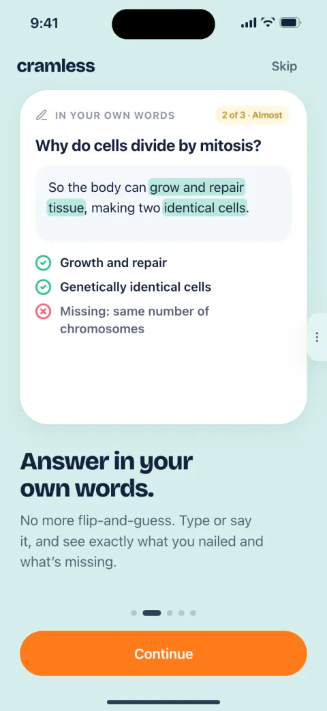
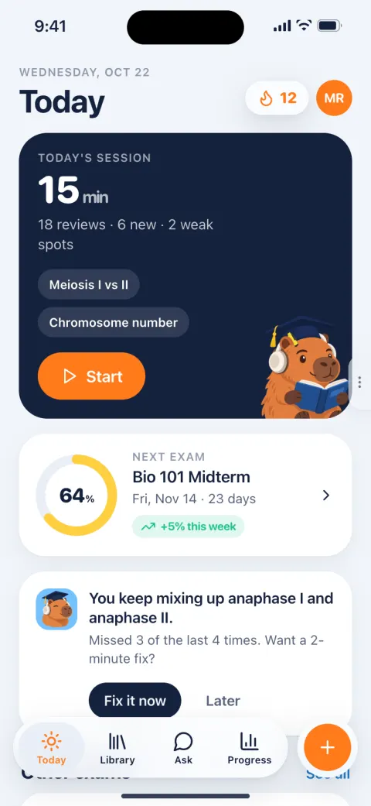
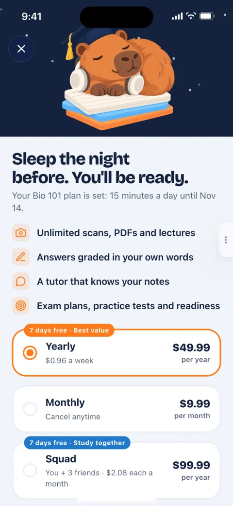

<title>Studyly Rethink</title>
<meta name="claude:viewport-fit-sides" content="cover">
<link rel="preconnect" href="https://fonts.googleapis.com">
<link rel="preconnect" href="https://fonts.gstatic.com" crossorigin>
<link rel="stylesheet" href="https://fonts.googleapis.com/css2?family=Atkinson+Hyperlegible+Next:ital,wght@0,400;0,600;0,700;0,800;1,400&family=Atkinson+Hyperlegible+Mono:wght@400;600&family=Bricolage+Grotesque:opsz,wght@12..96,600..800&display=swap">
<style>
/* Layout: one editorial column (760px) inside a 1180px frame; wide bands for the market table, matrix, brand boards and the phone. */
:root {
  --bg: #F4F6FA; --surface: #FFFFFF; --surface-2: #EBF0F7; --surface-3: #DDE5F0;
  --ink: #14213D; --ink-2: #4C5871; --ink-3: #76829A; --line: rgba(20,33,61,.12);
  --night: #14213D; --tang: #E8630A; --tang-fill: #FF7A1A; --sky: #7CC8FF; --sky-ink: #1D6FB5;
  --mint: #138A63; --mint-fill: #22C38E; --sun: #A87700; --sun-fill: #FFCF3F; --rose: #C92F55; --rose-fill: #FF5A78;
  --chart-rest: #76829A; --chart-hi: #E8630A;
  --f-display: "Bricolage Grotesque", ui-rounded, system-ui, sans-serif;
  --f-body: "Atkinson Hyperlegible Next", system-ui, -apple-system, "Segoe UI", Roboto, sans-serif;
  --f-mono: "Atkinson Hyperlegible Mono", ui-monospace, "SF Mono", Menlo, monospace;
}
@media (prefers-color-scheme: dark) { :root:not([data-theme="light"]) {
  --bg: #0B1220; --surface: #141D2F; --surface-2: #1B263B; --surface-3: #26334D;
  --ink: #EEF3FA; --ink-2: #AEB8CB; --ink-3: #8792A8; --line: rgba(255,255,255,.11);
  --tang: #FF8A33; --sky-ink: #8CCBFF; --mint: #3DD9A0; --sun: #FFCF3F; --rose: #FF7A93;
  --chart-rest: #8792A8; --chart-hi: #FF8A33; color-scheme: dark;
} }
:root[data-theme="dark"] {
  --bg: #0B1220; --surface: #141D2F; --surface-2: #1B263B; --surface-3: #26334D;
  --ink: #EEF3FA; --ink-2: #AEB8CB; --ink-3: #8792A8; --line: rgba(255,255,255,.11);
  --tang: #FF8A33; --sky-ink: #8CCBFF; --mint: #3DD9A0; --sun: #FFCF3F; --rose: #FF7A93;
  --chart-rest: #8792A8; --chart-hi: #FF8A33; color-scheme: dark;
}
* { box-sizing: border-box; }
body { background: var(--bg); color: var(--ink); font: 400 17px/1.6 var(--f-body); margin: 0; -webkit-font-smoothing: antialiased; }
body::before { content: ""; position: fixed; inset: 0 0 auto; height: env(safe-area-inset-top, 0px); z-index: 40; background: var(--bg); }
a { color: var(--sky-ink); text-underline-offset: 3px; }
img { max-width: 100%; display: block; }
h1, h2, h3, h4 { text-wrap: balance; margin: 0; }
p { margin: 0; text-wrap: pretty; }
:focus-visible { outline: 3px solid var(--sky); outline-offset: 2px; border-radius: 6px; }
.frame { max-width: 1180px; margin: 0 auto; padding-left: max(16px, env(safe-area-inset-left, 0px)); padding-right: max(16px, env(safe-area-inset-right, 0px)); }
.col { max-width: 760px; }
.num, td.n, .tab-n { font-variant-numeric: tabular-nums; }
.mono { font-family: var(--f-mono); }
.muted { color: var(--ink-2); } .faint { color: var(--ink-3); }

/* top bar */
.top { position: sticky; top: env(safe-area-inset-top, 0px); z-index: 30; background: color-mix(in srgb, var(--bg) 88%, transparent); -webkit-backdrop-filter: blur(14px); backdrop-filter: blur(14px); border-bottom: 1px solid var(--line); }
.top .frame { display: flex; align-items: center; gap: 18px; height: 56px; }
.word { font: 800 22px/1 var(--f-display); letter-spacing: -.035em; color: var(--ink); text-decoration: none; white-space: nowrap; }
.top nav { display: flex; gap: 4px; overflow-x: auto; scrollbar-width: none; min-width: 0; flex: 1; }
.top nav::-webkit-scrollbar { display: none; }
.top nav a { white-space: nowrap; color: var(--ink-2); text-decoration: none; font-size: 14px; font-weight: 600; padding: 6px 10px; border-radius: 999px; }
.top nav a:hover { background: var(--surface-2); color: var(--ink); }

/* hero */
.hero { padding-block: 56px 40px; display: grid; grid-template-columns: minmax(0, 1fr); gap: 36px; align-items: center; }
@media (min-width: 980px) { .hero { grid-template-columns: minmax(0, 1.05fr) minmax(0, .95fr); padding-block: 72px 56px; } }
.eyebrow { font: 700 12.5px/1.2 var(--f-mono); letter-spacing: .08em; text-transform: uppercase; color: var(--ink-3); }
.hero h1 { font: 800 clamp(44px, 8vw, 84px)/.95 var(--f-display); letter-spacing: -.045em; margin-top: 14px; }
.hero h1 em { font-style: normal; color: var(--tang); }
.hero .lead { font-size: clamp(19px, 2.2vw, 22px); line-height: 1.5; margin-top: 20px; color: var(--ink-2); max-width: 34em; }
.btns { display: flex; flex-wrap: wrap; gap: 10px; margin-top: 26px; }
.btn { display: inline-flex; align-items: center; gap: 8px; height: 48px; padding: 0 20px; border-radius: 999px; font: 700 16px/1 var(--f-body); text-decoration: none; border: 0; cursor: pointer; }
.btn.dark { background: var(--ink); color: var(--bg); }
.btn.line { background: transparent; color: var(--ink); box-shadow: inset 0 0 0 1.5px var(--line); }
.hero-shots { position: relative; display: flex; justify-content: center; gap: 0; min-height: 420px; }
.hero-shots img { width: 37%; max-width: 230px; border-radius: 26px; box-shadow: 0 30px 60px rgba(20,33,61,.22), 0 0 0 1px var(--line); }
.hero-shots img:nth-child(1) { transform: rotate(-6deg) translate(18%, 26px); }
.hero-shots img:nth-child(2) { transform: translateY(-6px); z-index: 2; }
.hero-shots img:nth-child(3) { transform: rotate(6deg) translate(-18%, 26px); }
.facts { display: grid; grid-template-columns: repeat(2, minmax(0, 1fr)); gap: 14px 18px; margin-top: 30px; max-width: 520px; }
.fact { border-left: 3px solid var(--tang-fill); padding: 2px 0 2px 12px; }
.fact b { display: block; font: 800 22px/1.1 var(--f-display); letter-spacing: -.02em; }
.fact span { font-size: 14px; color: var(--ink-2); line-height: 1.35; display: block; margin-top: 3px; }

/* sections */
.sec { padding-block: 64px; border-top: 1px solid var(--line); scroll-margin-top: 64px; }
.sec > .frame > .head { max-width: 760px; margin-bottom: 30px; }
.sec h2 { font: 800 clamp(32px, 4.6vw, 46px)/1.04 var(--f-display); letter-spacing: -.035em; margin-top: 10px; }
.sec .intro { font-size: 19px; color: var(--ink-2); margin-top: 14px; }
h3.sub { font: 800 24px/1.15 var(--f-display); letter-spacing: -.02em; margin: 44px 0 14px; }
h3.sub:first-child { margin-top: 0; }
.prose p + p { margin-top: 14px; }
.prose ul, .prose ol { padding-left: 1.2em; margin: 10px 0 0; }
.prose li { margin: 6px 0; }
.grid2 { display: grid; grid-template-columns: repeat(auto-fit, minmax(min(100%, 320px), 1fr)); gap: 16px; }
.grid3 { display: grid; grid-template-columns: repeat(auto-fit, minmax(min(100%, 300px), 1fr)); gap: 16px; }
td.nm { font-weight: 700; }
.card { background: var(--surface); border-radius: 22px; padding: 22px; box-shadow: 0 1px 2px rgba(20,33,61,.05), 0 10px 30px rgba(20,33,61,.05); min-width: 0; }
.card h4 { font: 800 19px/1.2 var(--f-display); letter-spacing: -.015em; }
.card p, .card li { font-size: 16px; }
.card .k { font: 700 12px/1 var(--f-mono); letter-spacing: .06em; text-transform: uppercase; color: var(--ink-3); margin-bottom: 8px; display: block; }
.card ul { margin: 10px 0 0; padding-left: 1.1em; }
.card li { margin: 5px 0; }
.night { background: var(--night); color: #EEF3FA; }
.night .muted, .night p { color: #C9D3E4; }
.callout { border-radius: 20px; padding: 18px 20px; background: var(--surface-2); }
.callout.warn { box-shadow: inset 4px 0 0 var(--rose-fill); }
.callout.good { box-shadow: inset 4px 0 0 var(--mint-fill); }

/* verdict */
.verdict { display: grid; grid-template-columns: repeat(auto-fit, minmax(min(100%, 270px), 1fr)); gap: 16px; }
.verdict .card { display: flex; flex-direction: column; gap: 10px; }
.verdict .card h4 { font-size: 21px; }
.badge { display: inline-flex; align-items: center; gap: 6px; height: 26px; padding: 0 10px; border-radius: 999px; font: 700 12.5px/1 var(--f-body); background: var(--surface-2); color: var(--ink-2); white-space: nowrap; }
.badge.tang { background: color-mix(in srgb, var(--tang-fill) 16%, transparent); color: var(--tang); }
.badge.mint { background: color-mix(in srgb, var(--mint-fill) 16%, transparent); color: var(--mint); }
.badge.rose { background: color-mix(in srgb, var(--rose-fill) 14%, transparent); color: var(--rose); }
.badge.sky { background: color-mix(in srgb, var(--sky) 22%, transparent); color: var(--sky-ink); }
.badge.sun { background: color-mix(in srgb, var(--sun-fill) 24%, transparent); color: var(--sun); }

/* stats */
.stats { display: grid; grid-template-columns: repeat(auto-fit, minmax(min(100%, 240px), 1fr)); gap: 12px; }
.stat { background: var(--surface); border-radius: 20px; padding: 18px; min-width: 0; }
.stat b { display: block; font: 800 32px/1 var(--f-display); letter-spacing: -.03em; }
.stat p { font-size: 15px; color: var(--ink-2); margin-top: 8px; line-height: 1.45; }
.stat .src { font-size: 12.5px; color: var(--ink-3); margin-top: 8px; display: block; }

/* tables */
.tw { overflow-x: auto; border-radius: 18px; background: var(--surface); box-shadow: 0 1px 2px rgba(20,33,61,.05); }
table { border-collapse: collapse; width: 100%; font-size: 15px; }
th, td { text-align: left; padding: 11px 14px; border-bottom: 1px solid var(--line); vertical-align: top; }
th { font: 700 12.5px/1.2 var(--f-mono); letter-spacing: .04em; text-transform: uppercase; color: var(--ink-3); background: var(--surface); position: sticky; top: 0; white-space: nowrap; }
tr:last-child td { border-bottom: 0; }
td .nm { font-weight: 700; }
tr.hl td { background: color-mix(in srgb, var(--tang-fill) 9%, transparent); }
.apps td:nth-child(1) { min-width: 140px; } .apps td:nth-child(2) { min-width: 240px; } .apps td:nth-child(3) { min-width: 170px; } .apps td:nth-child(4) { min-width: 170px; } .apps td:nth-child(5) { min-width: 240px; }
.filters { display: flex; flex-wrap: wrap; gap: 8px; margin-bottom: 14px; align-items: center; }
.filters button { height: 36px; padding: 0 14px; border-radius: 999px; border: 0; background: var(--surface); color: var(--ink-2); font: 700 14px/1 var(--f-body); cursor: pointer; box-shadow: inset 0 0 0 1px var(--line); }
.filters button[aria-pressed="true"] { background: var(--ink); color: var(--bg); box-shadow: none; }
.filters input { height: 36px; border-radius: 999px; border: 0; box-shadow: inset 0 0 0 1px var(--line); background: var(--surface); color: var(--ink); padding: 0 14px; font: 400 15px/1 var(--f-body); min-width: 0; flex: 1 1 180px; max-width: 280px; }
.count { font-size: 14px; color: var(--ink-3); margin-left: auto; }

/* matrix */
.matrix th:not(:first-child), .matrix td:not(:first-child) { text-align: center; }
.matrix td:first-child { min-width: 230px; font-weight: 600; }
.matrix th.us, .matrix td.us { background: color-mix(in srgb, var(--tang-fill) 10%, var(--surface)); }
.matrix tr.grp td { background: var(--surface-2); font: 700 12.5px/1.2 var(--f-mono); letter-spacing: .05em; text-transform: uppercase; color: var(--ink-3); }
.g-y { color: var(--mint); font-size: 18px; } .g-p { color: var(--sun); font-size: 18px; } .g-n { color: var(--ink-3); }
.ph { font: 700 12px/1 var(--f-mono); padding: 4px 7px; border-radius: 6px; background: var(--tang-fill); color: #14213D; white-space: nowrap; }
.ph.v11 { background: var(--sky); } .ph.v12 { background: var(--surface-3); color: var(--ink); }
.legend { display: flex; flex-wrap: wrap; gap: 16px; font-size: 14px; color: var(--ink-2); margin-top: 12px; align-items: center; }

/* charts */
.chart { background: var(--surface); border-radius: 22px; padding: 18px; position: relative; }
.chart svg { display: block; width: 100%; height: auto; overflow: visible; }
.chart .ax { stroke: var(--line); }
.chart text { fill: var(--ink-2); font-family: var(--f-body); }
.chart .lbl { font-size: 12.5px; font-weight: 700; fill: var(--ink); }
.chart .quad { font-size: 12px; font-weight: 700; fill: var(--ink-3); letter-spacing: .04em; text-transform: uppercase; }
.dot { fill: var(--chart-rest); stroke: var(--surface); stroke-width: 2; cursor: default; }
.dot.hi { fill: var(--chart-hi); }
.dot.ref { fill: var(--surface); stroke: var(--chart-rest); stroke-width: 2; }
.tip { position: absolute; pointer-events: none; background: var(--ink); color: var(--bg); font-size: 13.5px; line-height: 1.35; padding: 8px 10px; border-radius: 10px; max-width: 240px; opacity: 0; transition: opacity .12s; z-index: 5; }
.bars { display: grid; gap: 7px; }
.brow { display: grid; grid-template-columns: minmax(110px, 190px) minmax(0, 1fr); gap: 12px; align-items: center; font-size: 14.5px; }
.brow .nm { text-align: right; color: var(--ink-2); font-weight: 600; line-height: 1.2; }
.brow .track { position: relative; height: 24px; }
.brow .b { position: absolute; left: 0; top: 4px; height: 16px; border-radius: 0 4px 4px 0; background: var(--chart-rest); }
.brow.hi .b { background: var(--chart-hi); }
.brow.hi .nm { color: var(--ink); font-weight: 800; }
.brow .v { position: absolute; top: 3px; font: 700 13px/18px var(--f-mono); color: var(--ink); white-space: nowrap; padding: 0 4px 0 6px; background: var(--surface); border-radius: 4px; z-index: 2; }
.brow .b { z-index: 1; }
.median { position: absolute; top: -4px; bottom: -4px; width: 0; border-left: 2px dashed var(--ink-3); z-index: 0; }
.bars-wrap { position: relative; }
.median-label { position: absolute; top: -26px; font: 700 12px/1 var(--f-mono); color: var(--ink-3); transform: translateX(-50%); white-space: nowrap; }

/* loop */
.loop { display: grid; grid-template-columns: repeat(auto-fit, minmax(min(100%, 170px), 1fr)); gap: 10px; counter-reset: step; }
.loop .st { background: var(--surface); border-radius: 18px; padding: 16px; position: relative; }
.loop .st::before { counter-increment: step; content: counter(step); display: grid; place-items: center; width: 28px; height: 28px; border-radius: 50%; background: var(--tang-fill); color: #14213D; font: 800 14px/1 var(--f-mono); margin-bottom: 10px; }
.loop .st b { display: block; font-size: 17px; }
.loop .st span { display: block; font-size: 14.5px; color: var(--ink-2); margin-top: 4px; line-height: 1.4; }

/* feature list */
.feat { display: grid; grid-template-columns: repeat(auto-fit, minmax(min(100%, 340px), 1fr)); gap: 16px; }
.feat .card ul { list-style: none; padding: 0; }
.feat .card li { display: grid; grid-template-columns: minmax(0, 1fr) auto; gap: 10px; align-items: baseline; padding: 7px 0; border-top: 1px solid var(--line); font-size: 15px; }
.feat .card li:first-child { border-top: 0; }

/* storyboard + gallery */
.gal { display: flex; gap: 14px; overflow-x: auto; padding: 4px 2px 16px; scroll-snap-type: x proximity; scrollbar-width: thin; }
.gal figure { margin: 0; flex: 0 0 200px; scroll-snap-align: start; }
.gal img { width: 200px; border-radius: 22px; box-shadow: 0 10px 26px rgba(20,33,61,.14), 0 0 0 1px var(--line); background: var(--surface); }
.gal figcaption { font-size: 14px; color: var(--ink-2); margin-top: 10px; line-height: 1.4; }
.gal figcaption b { color: var(--ink); display: block; }

/* paywall */
.plans { display: grid; grid-template-columns: repeat(auto-fit, minmax(min(100%, 230px), 1fr)); gap: 14px; }
.plan { background: var(--surface); border-radius: 22px; padding: 22px; position: relative; box-shadow: inset 0 0 0 2px var(--line); }
.plan.pick { box-shadow: inset 0 0 0 2.5px var(--tang-fill); }
.plan .flag { position: absolute; top: -12px; left: 18px; background: var(--tang-fill); color: #14213D; font: 800 12px/24px var(--f-body); padding: 0 10px; border-radius: 999px; }
.plan .pr { font: 800 36px/1 var(--f-display); letter-spacing: -.03em; margin-top: 10px; }
.plan .pr small { font: 600 15px/1 var(--f-body); color: var(--ink-2); letter-spacing: 0; }

/* brand */
.brand-dir { display: grid; gap: 18px; }
.bd { background: var(--surface); border-radius: 26px; padding: 24px; display: grid; grid-template-columns: minmax(0, 1fr); gap: 20px; }
@media (min-width: 900px) { .bd { grid-template-columns: minmax(0, .9fr) minmax(0, 1.1fr); } }
.bd .name { font: 800 46px/1 var(--f-display); letter-spacing: -.04em; }
.bd .tag { font-size: 18px; color: var(--ink-2); margin-top: 8px; }
.sw { display: flex; gap: 8px; flex-wrap: wrap; margin-top: 16px; }
.sw span { display: grid; gap: 6px; font: 600 11.5px/1.2 var(--f-mono); color: var(--ink-3); }
.sw i { width: 54px; height: 40px; border-radius: 10px; box-shadow: inset 0 0 0 1px var(--line); display: block; }
.icons { display: grid; grid-template-columns: repeat(3, minmax(0, 1fr)); gap: 12px; }
.icons figure { margin: 0; }
.icons img { width: 100%; aspect-ratio: 1; border-radius: 22%; box-shadow: 0 8px 22px rgba(20,33,61,.18); }
.icons figcaption { font-size: 13.5px; color: var(--ink-2); margin-top: 8px; line-height: 1.35; }
.icons figcaption b { color: var(--ink); }
.pick-tag { display: inline-block; margin-left: 6px; }
.poses { display: grid; grid-template-columns: repeat(auto-fit, minmax(min(46%, 150px), 1fr)); gap: 12px; }
.poses figure { margin: 0; background: var(--sky); border-radius: 22px; padding: 10px; }
.poses img { width: 100%; aspect-ratio: 1; object-fit: contain; }
.poses figcaption { font-size: 13.5px; color: #14213D; font-weight: 700; text-align: center; padding-bottom: 6px; }

/* phone */
.proto { display: grid; grid-template-columns: minmax(0, 1fr); gap: 32px; align-items: start; }
@media (min-width: 980px) { .proto { grid-template-columns: auto minmax(0, 1fr); } }
.phone { --s: .86; width: calc(393px * var(--s) + 24px); height: calc(852px * var(--s) + 24px); padding: 12px; border-radius: calc(58px * var(--s) + 12px); background: #0A0E17; box-shadow: 0 0 0 2px #2A3347, 0 40px 80px rgba(10,18,36,.3); position: relative; margin: 0 auto; }
.phone .scr { width: calc(393px * var(--s)); height: calc(852px * var(--s)); border-radius: calc(58px * var(--s)); overflow: hidden; position: relative; background: #F1F5FA; }
.phone iframe { width: 393px; height: 852px; border: 0; transform: scale(var(--s)); transform-origin: 0 0; display: block; }
@media (max-width: 979px) { .phone { display: none; } }
.only-small { display: none; }
@media (max-width: 979px) { .only-small { display: block; } }
.url { font: 600 15px/1.4 var(--f-mono); background: var(--surface-2); padding: 10px 12px; border-radius: 12px; word-break: break-all; display: flex; gap: 10px; align-items: center; justify-content: space-between; }
.url button { flex: none; height: 32px; padding: 0 12px; border-radius: 999px; border: 0; background: var(--ink); color: var(--bg); font: 700 13px/1 var(--f-body); cursor: pointer; }

/* sources */
details.src { background: var(--surface); border-radius: 18px; padding: 14px 18px; margin-top: 10px; }
details.src summary { cursor: pointer; font-weight: 700; }
details.src ul { margin: 10px 0 0; padding-left: 1.1em; font-size: 14.5px; }
details.src li { margin: 4px 0; word-break: break-word; }
footer { padding-block: 40px 70px; color: var(--ink-3); font-size: 14px; border-top: 1px solid var(--line); }
@media (prefers-reduced-motion: reduce) { * { transition: none !important; animation: none !important; } }
</style>

<header class="top"><div class="frame">
  <a class="word" href="#top" aria-label="Back to top">cramless</a>
  <nav aria-label="Sections">
    <a href="#verdict">Verdict</a><a href="#repo">Rebuild</a><a href="#market">Market</a><a href="#position">Positioning</a><a href="#concept">Concept</a><a href="#features">Features</a><a href="#ai">AI</a><a href="#onboarding">Onboarding</a><a href="#paywall">Paywall</a><a href="#tech">Tech</a><a href="#brand">Name &amp; brand</a><a href="#prototype">Prototype</a><a href="#roadmap">Roadmap</a><a href="#sources">Sources</a>
  </nav>
</div></header>

<main id="top">
<div class="frame">
  <section class="hero">
    <div>
      <div class="eyebrow">Studyly, rethought · October 22, 2026</div>
      <h1>Rebuild Studyly as <em>Cramless</em>.</h1>
      <p class="lead">The study app that makes sure you're ready, not just busy. It turns everything from your classes into a short daily plan, quizzes you in your own words, and shows exactly how ready you are for each exam.</p>
      <div class="btns"><a class="btn dark" href="#prototype">Try the prototype</a><a class="btn line" href="#verdict">Read the verdict</a></div>
      <div class="facts">
        <div class="fact"><b>~90 apps</b><span>researched across 7 segments</span></div>
        <div class="fact"><b>SwiftUI</b><span>native rebuild; the Flutter code was two days old</span></div>
        <div class="fact"><b>$49.99/yr</b><span>Pro, with a 7-day trial and an honest free plan</span></div>
        <div class="fact"><b>~$0.10–0.60</b><span>AI cost per student per month, iPhone AI first</span></div>
      </div>
    </div>
    <div class="hero-shots" aria-hidden="true">
      
      
      
    </div>
  </section>
</div>

<!-- ============ VERDICT ============ -->
<section class="sec" id="verdict"><div class="frame">
  <div class="head"><div class="eyebrow">The short answer</div><h2>What it should be to win</h2>
    <p class="intro">Generating flashcards from a PDF is free everywhere now, so a better generator isn't enough to win. What nobody owns yet is everything after generation: knowing what you actually know, deciding what to study today, and telling you honestly whether you're ready. Cramless should own that loop, on the phone, every day.</p></div>
  <div class="verdict">
    <div class="card"><span class="badge tang">What it is</span><h4>An exam-readiness coach</h4><p>Snap pages, import slides, record lectures or bring your Quizlet and Anki sets. Cramless builds a plan to your exam date, asks you 10–15 minutes of questions a day, grades your answers in your own words, and shows a readiness score per exam and per topic.</p></div>
    <div class="card"><span class="badge mint">Why it can win</span><h4>The gap is real and specific</h4><ul><li>ChatGPT and Gemini explain brilliantly but don't remember what you know, schedule reviews or plan to your exam date.</li><li>Anki has the best scheduler and the hardest UX; Quizlet only added spaced repetition in Aug 2026.</li><li>Students distrust AI study content and hate billing traps; both are top complaints.</li><li>Fewer than 1 in 5 students feel very confident about their progress.</li></ul></div>
    <div class="card"><span class="badge sky">Why people pay</span><h4>Time saved and grades protected</h4><ul><li>Unlimited capture: scans, PDFs, lectures turned into checked questions.</li><li>Answers graded in your own words, with the gap named.</li><li>Exam plans, practice tests in your teacher's format, projected grade.</li><li>A tutor that cites your own notes.</li></ul><p class="muted">Not answers. Answers are free everywhere.</p></div>
    <div class="card"><span class="badge sun">Why every day</span><h4>A reason to open it today</h4><ul><li>Today's session is sized to your time and to what you're about to forget.</li><li>Readiness visibly moves, and it decays if you skip.</li><li>Streak with freezes, a Lock Screen widget, a reminder at your time.</li><li>Classmates studying now, and Cap, a calm mascot, instead of guilt.</li></ul></div>
  </div>
  <div class="callout warn mt" style="margin-top:18px">
    <b>The honest risks.</b> Google (Aug 2026) and OpenAI (Oct 2026) just shipped study tools, and they're free. Gizmo has $22M and 13M learners on the same habit playbook. Quizlet bought Coconote and added spaced repetition. Starting iOS-only misses Chromebook, Windows and Android students. Usage is seasonal. Acquisition in this category is a TikTok volume game. The plan below is built around these: own the loop the giants don't, earn trust they've lost, and launch for a semester start.
  </div>
</div></section>

<!-- ============ REPO / REBUILD ============ -->
<section class="sec" id="repo"><div class="frame">
  <div class="head"><div class="eyebrow">What's in the repo today</div><h2>Rebuild natively. Keep the idea, drop the code.</h2>
    <p class="intro">The Flutter app is 11 commits written over two days (Oct 8–9, 2025): about 17,000 lines of Dart, 2 tests, placeholder AI, an Isar 3 database whose upstream is abandoned, and a Supabase backend that has been deleted (the schema backup from Feb 2026 is still in the repo). The PRD's core idea is good and survives: an app that "teaches by questioning".</p></div>
  <div class="tw"><table>
    <thead><tr><th>Question</th><th>Keep Flutter</th><th>Rebuild in SwiftUI</th></tr></thead>
    <tbody>
      <tr><td class="nm">Sunk cost</td><td>Two days of UI scaffolding</td><td>Nothing of value lost</td></tr>
      <tr><td class="nm">Data layer</td><td>Isar 3 is unmaintained; would need replacing anyway</td><td>SwiftData offline store, synced to Supabase</td></tr>
      <tr><td class="nm">Your recent apps</td><td>Pillar/Bitewell is the only Flutter app</td><td>Simpatico, Homebird, Sealed, Keepable, Dozen and Capital AI are SwiftUI with shared patterns: StoreKit 2, Supabase edge relay, on-device Foundation Models, XcodeGen, sim-verify</td></tr>
      <tr><td class="nm">Apple capabilities the concept depends on</td><td>Plugins or platform channels for each</td><td>First-class: Foundation Models and free Private Cloud Compute (iOS 27), SpeechTranscriber for offline lectures, VisionKit document scanning, widgets and Live Activities, App Intents and Visual Intelligence, PencilKit handwriting, Liquid Glass</td></tr>
      <tr><td class="nm">Android and web</td><td>One codebase, in theory</td><td>A web viewer for shared sets in v1.1; a full Android or web app only if the data says so</td></tr>
    </tbody></table></div>
  <p class="muted" style="margin-top:14px">Carried over from the PRD: the Socratic core (now "In your own words" and "Apply it" questions plus a hints-first tutor), the Flash/Deep/Exam modes (now daily session, practice test and exam eve), spaced repetition (upgraded from SM-2 to FSRS-6) and the Supabase schema as a reference.</p>
</div></section>

<!-- ============ MARKET ============ -->
<section class="sec" id="market"><div class="frame">
  <div class="head"><div class="eyebrow">Market research</div><h2>Every app in the category, and what the numbers say</h2>
    <p class="intro">Five parallel research passes on Oct 22, 2026 covered flashcard and spaced-repetition apps, AI note and lecture tools, AI tutors and homework helpers, planners, focus and exam prep, plus market data and the AI stack. Figures marked "claimed" are the company's own; app-tracker revenue figures are estimates.</p></div>

  <h3 class="sub">The market in numbers</h3>
  <div class="stats">
    <div class="stat"><b>$3.8B</b><p>Education app revenue worldwide in 2025, up 18% on 2024.</p><span class="src">AppTweak, Feb 2026</span></div>
    <div class="stat"><b>3 of top 20</b><p>Pure study apps in the US top-grossing Education chart: Quizlet #4, Gauth #17, Gizmo #19. The rest are languages, kids and plants.</p><span class="src">App Store chart, Oct 22, 2026</span></div>
    <div class="stat"><b>13M</b><p>Gizmo learners, up from 300K in 2023, after copying Duolingo's streaks, lives and leagues. $22M Series A in April 2026.</p><span class="src">Pulse 2.0, Apr 2026</span></div>
    <div class="stat"><b>&lt;1 in 5</b><p>Students who feel very confident about their study progress; 98% want tools that adapt to them.</p><span class="src">Quizlet, How America Learns 2026</span></div>
    <div class="stat"><b>54%</b><p>US teens who used AI chatbots for schoolwork by fall 2025. 95% of UK undergraduates use AI.</p><span class="src">Pew, Feb 2026 · HEPI, Mar 2026</span></div>
    <div class="stat"><b>~180K</b><p>Teens who used ChatGPT's Study mode, against 460M US homework messages a week. Guided modes are a toggle few people use.</p><span class="src">OpenAI via TUN, Aug 2026</span></div>
    <div class="stat"><b>$44.99 · $9.99</b><p>Median yearly and monthly Education prices; yearly plans are 59–66% of sales.</p><span class="src">RevenueCat, State of Subscription Apps 2026</span></div>
    <div class="stat"><b>4.86%</b><p>Education's refund rate, the highest of any category. Billing tricks were the top complaint across the apps we read.</p><span class="src">RevenueCat 2025 · Trustpilot, App Store reviews</span></div>
  </div>

  <h3 class="sub">Every app we looked at</h3>
  <p class="muted" style="margin-bottom:14px">Filter by segment or search. Prices are US list prices found on Oct 22, 2026; many apps A/B test prices, so treat them as typical.</p>
  <div class="filters" id="appFilters" role="toolbar" aria-label="Filter apps by segment"></div>
  <div class="tw" style="max-height:640px"><table class="apps"><thead><tr><th>App</th><th>What it is</th><th>Price</th><th>Traction</th><th>What students say or what changed</th></tr></thead><tbody id="appRows"></tbody></table></div>

  <h3 class="sub">The apps that matter most</h3>
  <div class="grid3" id="profiles"></div>

  <h3 class="sub">What a year costs</h3>
  <div class="chart"><div class="bars-wrap" id="priceBars" aria-label="Yearly price of each app, with Cramless highlighted"></div>
    <p class="faint" style="font-size:13.5px;margin-top:14px">Yearly list price of the main paid tier (USD). Gizmo's student price is $77.22. Turbo AI tests prices up to $119.99. The dashed line is the Education median ($44.99, RevenueCat 2026).</p></div>

  <h3 class="sub">What's free now, and what's still missing</h3>
  <div class="grid2">
    <div class="card"><span class="k">Commoditized</span><h4>Table stakes, often free</h4><ul>
      <li>Notes, flashcards, quizzes and podcasts from any upload (free in Gemini Notebook; ChatGPT added flashcards and quizzes in Oct 2026).</li>
      <li>Photo of a problem to an answer (Photomath steps are free; ChatGPT, Gemini and Lens do it too).</li>
      <li>Flashcards with Learn and Match modes (Knowt made Learn free).</li>
      <li>The spaced-repetition algorithm itself (FSRS is open source; Anki is free).</li>
      <li>Transcription (on-device in iOS 26; Otter gives 300 free minutes).</li></ul></div>
    <div class="card"><span class="k">Unmet</span><h4>Where the opening is</h4><ul>
      <li>A model of what each student knows, topic by topic, that drives what they do today.</li>
      <li>Exam-date plans that adapt when you miss a day.</li>
      <li>AI content students can trust: checked against the source, with a link to it.</li>
      <li>Fair grading of answers in your own words (Knowt users report right answers marked wrong).</li>
      <li>Anki-grade scheduling with zero setup and a modern UI; AnkiHub itself names UI as the priority.</li>
      <li>Honest pricing and two-tap cancel; reliability in exam season.</li>
      <li>Under-18 friendly tools: Google's newest study features and Claude are 18+.</li></ul></div>
  </div>

  <h3 class="sub">What actually brings students back every day</h3>
  <div class="grid3">
    <div class="card"><span class="k">Streaks</span><p>Duolingo users on a 7-day streak are 2.4× likelier to return the next day. Over half of its daily users hold 7+ day streaks; letting users bet on a streak lifted 7-day retention 14%; 15.4M streaks were restored in one June 2026 campaign.</p></div>
    <div class="card"><span class="k">Leagues and friends</span><p>Duolingo leagues added 17% learning time. YPT's "who's studying now" ranking and Forest's group trees use the same pull. Gizmo copied streaks, lives and leaderboards and grew from 300K to 13M.</p></div>
    <div class="card"><span class="k">The Lock Screen</span><p>A word-of-the-day widget made Vocabulary a top-20 grossing Education app. Notification timing tuned by experiment added 0.5% daily users and 2% new-user retention at Duolingo.</p></div>
    <div class="card"><span class="k">Cards that come due</span><p>Spaced repetition gives a built-in reason to return, but backlogs create guilt and churn (a top Anki complaint). Load balancing and a catch-up mode matter as much as the algorithm.</p></div>
    <div class="card"><span class="k">A companion</span><p>Focus Friend (a bean who knits while you focus) hit #1 overall in the US in Aug 2025 with about 30% next-day return. A character people like does work that a streak counter can't.</p></div>
    <div class="card"><span class="k">Exams</span><p>Students start trials late and convert near exams (the most late trials of any category). Exam countdowns, practice tests and readiness give that urgency a daily shape.</p></div>
  </div>

  <h3 class="sub">How students use AI, and where schools are going</h3>
  <div class="grid2">
    <div class="card prose"><p>Students use AI mostly to explain concepts (61%) and summarize (49%) (HEPI 2026). 29% go to AI first when stuck, up from 10% in 2023 (Chegg 2025). 60% of US teens say classmates cheat with AI often (Pew 2026).</p><p>Answer engines are shrinking: Chegg's revenue fell 51% year on year by Q2 2026 after 45% layoffs, and Brainly's paying base fell as general AI subscriptions rose (Yipit).</p></div>
    <div class="card prose"><p>Every major AI lab now markets "teach, don't tell", and schools buy tools they can control: Khanmigo, Microsoft's admin-enabled Study and Learn agent, Claude for Teachers.</p><p><b>Implication:</b> position Cramless as a learning tool parents and teachers can trust. Hints come first, "check my work" replaces "solve it", and there's no essay writer or "AI humanizer".</p></div>
  </div>

  <h3 class="sub">Subscription, growth and seasonality benchmarks</h3>
  <div class="grid3">
    <div class="card"><span class="k">Paywalls</span><ul>
      <li>Education download to trial: 6.5%; half of trials last 5–9 days (RevenueCat 2026).</li>
      <li>Hard paywalls: 10.7% paying by day 35 vs 2.1% for freemium (all apps).</li>
      <li>Trials of 17–32 days convert at 42.5% vs 25.5% under 4 days.</li>
      <li>Onboarding paywalls spread over several screens convert 37% better (Superwall 2026).</li>
      <li>Weekly plans are 52% of Education revenue at Adapty's customers, mostly homework helpers.</li></ul></div>
    <div class="card"><span class="k">Acquisition</span><ul>
      <li>StudyFetch: 225 TikTok and Instagram accounts run by student ambassadors, about 1B views.</li>
      <li>Coconote: 7 accounts, 259M views, about $200K MRR, then sold to Quizlet.</li>
      <li>Turbo AI pays creators $5 a video plus viral bonuses.</li>
      <li>Focus Friend: a creator co-founder took it to #1 overall.</li>
      <li>Gauth: Apple Search Ads on 1,700 keywords, #3 overall in back-to-school.</li></ul></div>
    <div class="card"><span class="k">Seasonality</span><ul>
      <li>Back to school is the spike: Gauth went from 20K to 742K weekly downloads between July and September 2024.</li>
      <li>Summer is the trough; AI homework revenue in Q3 2025 was below Q1.</li>
      <li>Exam peaks drive late conversions; Fiveable stops refunds during AP season.</li>
      <li>Launch for a semester start, not mid-term.</li></ul></div>
  </div>
</div></section>

<!-- ============ POSITIONING ============ -->
<section class="sec" id="position"><div class="frame">
  <div class="head"><div class="eyebrow">Positioning</div><h2>Ready, not busy</h2>
    <p class="intro">For high-school and college students who want to walk into exams ready, Cramless is the study app that turns everything from your classes into a short daily plan and makes sure it sticks. AI note tools and chatbots hand you more material. Cramless tracks what you actually know, quizzes you in your own words, and shows exactly how ready you are.</p></div>
  <div class="chart" id="mapWrap"><svg id="posMap" viewBox="0 0 720 470" role="img" aria-label="Positioning map: apps placed by whether they hand out answers or build lasting knowledge, and whether they are used around exams or every day"></svg><div class="tip" id="tip"></div>
    <p class="faint" style="font-size:13.5px;margin-top:6px">Placement is our judgment from the research, not measured data. Duolingo is shown hollow as the habit benchmark, not a study app.</p></div>

  <h3 class="sub">Why a student switches</h3>
  <div class="tw"><table>
    <thead><tr><th>Instead of</th><th>What they do well</th><th>Where students get stuck</th><th>What Cramless does</th></tr></thead>
    <tbody id="switchRows"></tbody></table></div>
</div></section>

<!-- ============ CONCEPT ============ -->
<section class="sec" id="concept"><div class="frame">
  <div class="head"><div class="eyebrow">The concept</div><h2>A little every day. Ready on exam day.</h2>
    <p class="intro">One loop does the work. Everything you capture becomes questions linked to their source; the plan decides what you see today; your answers update what Cramless knows about you; and the readiness score tells you the truth about where you stand.</p></div>
  <div class="loop">
    <div class="st"><b>Capture</b><span>Snap pages, import PDFs and slides, record lectures, bring Quizlet and Anki sets.</span></div>
    <div class="st"><b>Build</b><span>Topics and questions in six formats, each linked to its page, slide or timestamp and checked against it. You approve what goes in.</span></div>
    <div class="st"><b>Today's session</b><span>10–15 minutes: what you're about to forget, new material and your weak spots, in mixed formats.</span></div>
    <div class="st"><b>Feedback</b><span>Answers graded in your own words; Cap explains with your notes and turns repeated mistakes into a 2-minute fix.</span></div>
    <div class="st"><b>Readiness</b><span>Predicted recall over each exam's topics, shown per exam and per topic, with a projected grade.</span></div>
    <div class="st"><b>Plan and nudge</b><span>The plan bends to your week; a reminder at your time, a widget and a streak bring you back tomorrow.</span></div>
  </div>
  <div class="grid2" style="margin-top:16px">
    <div class="callout good"><b>Exam week.</b> A practice test in your teacher's format, then a night-before review of weak spots only, then Cap tells you to stop and sleep.</div>
    <div class="callout good"><b>After the exam.</b> Log your grade. Cramless compares it with its projection and calibrates, so the readiness score earns trust over a semester.</div>
  </div>
</div></section>

<!-- ============ FEATURES ============ -->
<section class="sec" id="features"><div class="frame">
  <div class="head"><div class="eyebrow">Features</div><h2>Everything the leaders have, done better</h2>
    <p class="intro">The matrix compares the features that decide where students study with the six products they compare us to. Below it is the full list, by area, with the release each feature lands in.</p></div>
  <div class="tw"><table class="matrix" id="matrix"></table></div>
  <div class="legend"><span><span class="g-y">●</span> has it</span><span><span class="g-p">◐</span> partly or limited</span><span><span class="g-n">–</span> not found (public info, Oct 2026)</span><span><span class="ph">Launch</span> <span class="ph v11">v1.1</span> <span class="ph v12">v1.2</span> Cramless release</span></div>

  <h3 class="sub">The full feature list</h3>
  <div class="feat" id="featList"></div>

  <h3 class="sub">Where Cramless is better, not just equal</h3>
  <div class="grid3">
    <div class="card"><h4>Checked, linked questions</h4><p>Every generated question links to its page, slide or timestamp, and a second pass checks it against the source before you see it.</p></div>
    <div class="card"><h4>Graded in your own words</h4><p>Retrieval practice beats rereading, and explaining beats recognizing. Cramless highlights the ideas you hit and names the one you missed.</p></div>
    <div class="card"><h4>A readiness score you can trust</h4><p>Built from predicted recall over the exam's scope, calibrated against your real grades, and labelled a projection.</p></div>
    <div class="card"><h4>Plans that bend</h4><p>Miss a day and the rest of the week absorbs it. Backlogs get a catch-up mode instead of a wall of 400 due cards.</p></div>
    <div class="card"><h4>Mistakes become lessons</h4><p>Repeated errors are grouped into a named confusion ("anaphase I vs II") with a 2-minute fix.</p></div>
    <div class="card"><h4>Lectures without the bill</h4><p>Transcribed on the iPhone, offline, free to us and private to you; "this will be on the exam" moments get flagged.</p></div>
    <div class="card"><h4>Native everywhere it counts</h4><p>Lock Screen widgets, Live Activities, Siri and Shortcuts, Visual Intelligence, Pencil answers on iPad.</p></div>
    <div class="card"><h4>Calm habit, no punishment</h4><p>Streak freezes and repair, never lives or caps on reviewing; Cap celebrates and tells you to sleep the night before.</p></div>
    <div class="card"><h4>Honest by design</h4><p>Clear prices, a reminder before a trial ends, two-tap cancel, no training on your notes, built for 13+.</p></div>
  </div>
</div></section>

<!-- ============ AI ============ -->
<section class="sec" id="ai"><div class="frame">
  <div class="head"><div class="eyebrow">AI that earns its place</div><h2>Helpful by construction, never a gimmick</h2>
    <p class="intro">AI does three jobs a student can't do quickly alone: turn material into good questions, judge an answer written in their own words, and explain a mistake using their own notes. Everything else, including what to study today and how ready you are, is deterministic math you can explain.</p></div>
  <div class="grid2">
    <div class="card"><span class="k">Principles</span><ul>
      <li><b>Grounded or silent.</b> Questions and tutor answers come from your material, with a link to the page, slide or timestamp. If your sources don't cover it, Cap says so.</li>
      <li><b>Checked before you see it.</b> A second pass compares each question and answer with the source and drops what doesn't match.</li>
      <li><b>Suggest, don't commit.</b> New sets arrive as a draft you approve.</li>
      <li><b>Math picks the schedule.</b> FSRS-6 and the exam date decide what you study; readiness is predicted recall.</li>
      <li><b>Hints first.</b> Cap asks before it tells. Under-18 accounts keep hints first.</li></ul></div>
    <div class="card"><span class="k">Principles, continued</span><ul>
      <li><b>On-device first.</b> Text recognition, transcription and short tasks run on the iPhone: free, private, offline.</li>
      <li><b>Honest uncertainty.</b> Every grade has "grade again"; projections say they're projections.</li>
      <li><b>Consent before cloud.</b> Cloud AI is opt-in, sending photos is a separate switch, and notes never train models (App Review 5.1.2(i) requires this consent anyway).</li>
      <li><b>No AI where it doesn't help.</b> No essay writer, no "humanizer", no AI friend chat, no AI-written guilt notifications.</li></ul></div>
  </div>
  <h3 class="sub">Where each AI job runs</h3>
  <div class="tw"><table>
    <thead><tr><th>Job</th><th>What the AI does</th><th>On the iPhone</th><th>In the cloud (through our relay)</th><th>Why it helps</th></tr></thead>
    <tbody id="aiRows"></tbody></table></div>
</div></section>

<!-- ============ ONBOARDING ============ -->
<section class="sec" id="onboarding"><div class="frame">
  <div class="head"><div class="eyebrow">Onboarding with live demos</div><h2>Show the product working, then ask for money</h2>
    <p class="intro">Each intro page is a live miniature of the real feature, using the same motion the product uses later: the scanner's brackets lock on, the highlighter marks the answer, the readiness ring climbs, the week reflows, the tutor cites a page. Then four one-tap questions, a real first set from the student's own page, a two-question check and a plan, and the paywall arrives after the first moment of value.</p></div>
  <div class="gal" id="onbGal"></div>
  <div class="grid2" style="margin-top:8px">
    <div class="card"><span class="k">The flow</span><ol class="prose" style="padding-left:1.2em;margin:6px 0 0;font-size:16px">
      <li>Welcome: Cap waves. "A little every day. Ready on exam day."</li>
      <li>Five live-demo pages, user-paced; the trust page plays once and rests.</li>
      <li>Four questions: goal, exam date, minutes a day, where notes live.</li>
      <li>First set: scan a page or use a sample; processing shows the real steps, including the source check.</li>
      <li>Approve the set, answer two questions (multiple choice and own words).</li>
      <li>Readiness 31%, then the plan builds itself: path to 90% by the exam date.</li>
      <li>Paywall with three options, or continue free.</li></ol></div>
    <div class="card"><span class="k">Rules and targets</span><ul>
      <li>Demo motion matches the shipped feature exactly; if they drift, one of them is lying.</li>
      <li>No auto-advancing pages; a haptic tick on page turns only; Reduce Motion shows each scene's final frame.</li>
      <li>A debug hook reopens onboarding at any page without wiping data, for screenshots.</li>
      <li>Target: first graded answer within 2 minutes of install; 60%+ of installs reach the readiness screen.</li></ul></div>
  </div>
</div></section>

<!-- ============ PAYWALL ============ -->
<section class="sec" id="paywall"><div class="frame">
  <div class="head"><div class="eyebrow">Three-option paywall</div><h2>Priced like a student budget, sold like a promise</h2>
    <p class="intro">The paywall comes after the plan is built and names it ("Your Bio 101 plan is set: 15 minutes a day until Nov 14"). The yearly plan is preselected with a 7-day trial and a visible timeline. Free stays useful, so word of mouth and shared sets keep working.</p></div>
  <div class="plans">
    <div class="plan pick"><span class="flag">7 days free · Best value</span><div class="k" style="font:700 12px/1 var(--f-mono);letter-spacing:.06em;text-transform:uppercase;color:var(--ink-3)">Yearly · preselected</div><div class="pr">$49.99<small> / year</small></div><p class="muted" style="margin-top:8px">$0.96 a week. Reminder on day 5; billing on day 7 unless cancelled.</p></div>
    <div class="plan"><div class="k" style="font:700 12px/1 var(--f-mono);letter-spacing:.06em;text-transform:uppercase;color:var(--ink-3)">Monthly</div><div class="pr">$9.99<small> / month</small></div><p class="muted" style="margin-top:8px">No trial. For students who only want exam season; the yearly plan saves 58%.</p></div>
    <div class="plan"><span class="flag" style="background:var(--sky)">7 days free · Study together</span><div class="k" style="font:700 12px/1 var(--f-mono);letter-spacing:.06em;text-transform:uppercase;color:var(--ink-3)">Squad</div><div class="pr">$99.99<small> / year</small></div><p class="muted" style="margin-top:8px">You and 3 friends, $2.08 each a month. Seats are invited in-app (like Duolingo's family plan), so every Squad brings three new students.</p></div>
  </div>
  <div class="grid2" style="margin-top:16px">
    <div class="card"><span class="k">Free plan</span><ul>
      <li>Unlimited reviews and cards you make yourself; FSRS scheduling; never a cap on studying.</li>
      <li>Streaks, widgets and reminders; Quizlet and Anki import.</li>
      <li>1 exam plan; 3 AI scans a week (up to 10 pages each); 20 graded answers and 10 tutor messages a day; lecture transcripts, with AI notes for 1 lecture a week.</li></ul>
      <p class="muted" style="margin-top:10px">Free usage runs on-device first, so it costs almost nothing.</p></div>
    <div class="card"><span class="k">Why these prices</span><ul>
      <li>The Education median is $44.99 a year and $9.99 a month; AI apps earn more per payer. $49.99 sits just above the median and far below AI-heavy rivals (Knowt Ultra $149.99, Gizmo $155.22, Turbo AI up to $119.99, StudyFetch about $96).</li>
      <li>No weekly plan: weekly plans keep about 3% of subscribers after a year, Education already has the highest refund rate, and trust is the wedge.</li>
      <li><b>Exam Pass, $14.99 for 30 days, one-time:</b> offered only to free users who decline within 3 weeks of an exam. It catches late converters without undercutting the main paywall.</li></ul></div>
  </div>
  <div class="callout" style="margin-top:16px"><b>Test after launch:</b> 7- vs 14-day trial (longer trials convert better); Squad vs a $119.99 Lifetime as the third option; a hard paywall at the end of onboarding vs soft (hard paywalls make 5× more payers by day 35, at the cost of reach); $49.99 vs $59.99.</div>
</div></section>

<!-- ============ TECH ============ -->
<section class="sec" id="tech"><div class="frame">
  <div class="head"><div class="eyebrow">Tech, backend and AI stack</div><h2>Native app, thin backend, AI on the iPhone first</h2>
    <p class="intro">The app does almost everything locally and stays fast offline. Supabase holds accounts, sync and shared content, and runs the AI relay that keeps provider keys off the phone, checks the subscription and meters quotas. The cloud models only see what the student chose to send.</p></div>
  <div class="grid3">
    <div class="card"><span class="k">On the iPhone</span><ul>
      <li>SwiftUI, iOS 26+ with Liquid Glass; Observation; XcodeGen</li>
      <li>SwiftData offline store; FSRS-6 scheduler in Swift, tested against the reference implementation</li>
      <li>VisionKit and Vision document recognition; SpeechTranscriber for lectures</li>
      <li>Foundation Models; Private Cloud Compute model on iOS 27 (free for small-business developers under daily limits)</li>
      <li>WidgetKit, ActivityKit, AppIntents, AlarmKit, PencilKit</li>
      <li>StoreKit 2 directly, like your other apps</li></ul></div>
    <div class="card"><span class="k">Backend (Supabase)</span><ul>
      <li>Auth: Sign in with Apple and email</li>
      <li>Postgres with row-level security: courses, sources, cards, exams, append-only review log</li>
      <li>Storage for source files the student uploads</li>
      <li>Edge Functions as the AI relay: App Store Server API entitlement check, per-account quotas, a normalized contract, a MOCK mode for tests</li>
      <li>Realtime later for class battles</li>
      <li>About $40–60 a month at 10K users</li></ul></div>
    <div class="card"><span class="k">Cloud models</span><ul>
      <li><b>Claude Haiku 5.5</b> ($0.10 / $0.50 per M tokens): writing questions, checking them against the source, grading</li>
      <li><b>Claude Sonnet 5.5</b> ($2 / $10): the tutor with built-in citations, practice tests, math and long-answer grading</li>
      <li><b>Gemini Flash-Lite</b>: PDFs with images, diagrams, audio fallback for older devices</li>
      <li>Structured outputs everywhere the app consumes results</li>
      <li>Provider swaps stay invisible to shipped apps behind the relay</li></ul></div>
  </div>
  <h3 class="sub">What AI costs per active student per month</h3>
  <div class="tw"><table>
    <thead><tr><th>Workload</th><th>Cloud only</th><th>iPhone AI first</th><th>How</th></tr></thead>
    <tbody>
      <tr><td class="nm">300 questions from ~50 pages</td><td class="n">$0.02</td><td class="n">~$0.01</td><td>On-device text recognition, Haiku 5.5 in batch, one page per on-device call where supported</td></tr>
      <tr><td class="nm">600 answers graded</td><td class="n">$0.14</td><td class="n">~$0.03</td><td>Short factual answers on-device; Haiku 5.5 at low effort for the rest</td></tr>
      <tr><td class="nm">40 tutor turns</td><td class="n">$1.12</td><td class="n">$0–0.56</td><td>Private Cloud Compute while eligible; Sonnet 5.5 for the hard half</td></tr>
      <tr><td class="nm">10 hours of lectures</td><td class="n">$0.31–1.50</td><td class="n">$0</td><td>SpeechTranscriber on the iPhone, offline</td></tr>
      <tr><td class="nm">20 minutes of voice tutoring</td><td class="n">$0.38–0.97</td><td class="n">~$0.04</td><td>On-device speech in and out, Haiku 5.5 in the middle</td></tr>
      <tr class="hl"><td class="nm">Heavy user, total</td><td class="n">≈ $3.20–3.80</td><td class="n">≈ $0.10–0.60</td><td>Against $3.54 a month net from the yearly plan (after Apple's 15%)</td></tr>
    </tbody></table></div>
  <p class="faint" style="font-size:13.5px;margin-top:10px">Estimates from current list prices (Anthropic, Google, OpenAI, Apple docs, Oct 2026). Savings depend on how many students have Apple Intelligence iPhones (roughly a third of active iPhones, unverified). Older phones fall back to the cloud and the free tier's quotas cap the cost.</p>
</div></section>

<!-- ============ BRAND ============ -->
<section class="sec" id="brand"><div class="frame">
  <div class="head"><div class="eyebrow">Name and brand</div><h2>Retire "Studyly". Three directions, one pick.</h2>
    <p class="intro">"Studyly" is hard to spell, reads like "studly", and says nothing about the promise. Every candidate below was checked against the US App Store on Oct 22, 2026; each direction has three icon options rendered with GPT Image 2.5 on fal.</p></div>
  <div class="tw"><table>
    <thead><tr><th>Name</th><th>Why it fits</th><th>App Store check</th><th>Verdict</th></tr></thead>
    <tbody id="nameRows"></tbody></table></div>
  <p class="muted" style="margin-top:12px;font-size:15px">Already taken or crowded in Education: Retain (Retain Cards, 419 ratings), Recall, Cue (an AI note taker with 3.7K ratings), Grasp, Knowable (an AI tutor), Engram, Kioku, Aced, Prepped, Mnemo, ReviseMate, Ivy, Lumen. Run a trademark search before committing to any name.</p>

  <div class="brand-dir" style="margin-top:26px" id="brandDirs"></div>

  <h3 class="sub">Cap, the mascot</h3>
  <div class="grid2">
    <div class="poses">
      <figure><figcaption>Hello</figcaption></figure>
      <figure><figcaption>Studying</figcaption></figure>
      <figure><figcaption>Session done</figcaption></figure>
      <figure><figcaption>The night before</figcaption></figure>
    </div>
    <div class="card prose"><p>A capybara is the internet's symbol of calm, which is exactly what Cramless sells. Cap never panics, never guilt-trips and always wears the graduation cap. "Cap" is also a nod to "no cap"; the app uses that line once, when you hit 90% ready.</p>
      <p><b>Voice:</b> short, warm, specific. "22 minutes tonight and you're done." Never "You're letting Cap down."</p>
      <p><b>Type:</b> Bricolage Grotesque for headlines and the wordmark; SF Pro in the app, SF Pro Rounded for numbers.</p>
      <p><b>Color:</b> Night ink, Sky, Tangerine for action, Mint for "you know this", Sun for "almost", Rose for "not yet". Highlighter marks reuse the same set when grading.</p></div>
  </div>
</div></section>

<!-- ============ PROTOTYPE ============ -->
<section class="sec" id="prototype"><div class="frame">
  <div class="head"><div class="eyebrow">Clickable prototype</div><h2>Try it on your phone</h2>
    <p class="intro">A web prototype of the key screens, built to feel like the iOS 26 app: live onboarding demos, the scanner, a set review, a study session that really grades what you type, the summary, the paywall, Today, the tutor, progress, the exam plan, lecture recording, the class space, settings and the Lock Screen widgets. The thin tab on the right edge opens a list of every screen.</p></div>
  <div class="proto">
    <div class="phone"><div class="scr"><iframe src="app/index.html#embed" title="Cramless prototype" loading="lazy"></iframe></div></div>
    <div>
      <div class="card">
        <span class="k">On your iPhone, over Tailscale</span>
        <div class="url"><span id="tsurl">https://macbook-pro.tail9699dc.ts.net:8823/app/</span><button type="button" id="copyTs">Copy</button></div>
        <p class="muted" style="margin-top:10px;font-size:15px">Works on devices signed in to your tailnet. In Safari, tap Share, then Add to Home Screen, and it opens full screen with the Cap icon. The plan itself is at the same address without <span class="mono">/app/</span>.</p>
        <div class="btns" style="margin-top:14px"><a class="btn dark" href="app/index.html" target="_blank" rel="noopener">Open full screen</a></div>
      </div>
      <div class="card" style="margin-top:14px"><span class="k">What to try</span><ul>
        <li>Swipe through the five intro pages and watch each demo.</li>
        <li>Answer the four questions, scan the sample page, approve the set.</li>
        <li>In the quick check, type your own answer to "why do cells divide by mitosis?" and see what the grader highlights.</li>
        <li>Pick a plan on the paywall, or keep the free plan.</li>
        <li>From Today: Start the session (all five question types), "Fix it now", the + button, Lecture.</li>
        <li>Ask Cap something, switch Hints first and Just explain, try dark mode in Profile.</li></ul></div>
    </div>
  </div>
  <h3 class="sub">Every screen</h3>
  <div class="gal" id="screensGal"></div>
</div></section>

<!-- ============ ROADMAP ============ -->
<section class="sec" id="roadmap"><div class="frame">
  <div class="head"><div class="eyebrow">Roadmap, metrics and launch</div><h2>Ship for the spring semester</h2>
    <p class="intro">Today is Oct 22. Ten weeks of building puts TestFlight in students' hands in mid-December and a release on the App Store for the January semester start, with AP and finals season in May as the first big test.</p></div>
  <div class="grid2">
    <div class="card"><span class="k">Launch · mid-January 2027</span><ul>
      <li>Weeks 1–2: design system, data model, FSRS-6 with tests, Supabase and the relay contract in MOCK mode</li>
      <li>Weeks 3–6: capture (scan, PDF, paste, Quizlet and Anki import), generation with source links and the check pass, set review, sessions with five formats and own-words grading, exams, plan and readiness</li>
      <li>Weeks 7–9: tutor, lecture recording, streaks, widgets, Live Activity, reminders, onboarding demos, paywall, consent</li>
      <li>Week 10: TestFlight with 50–100 students, fixes, submission</li></ul></div>
    <div class="card"><span class="k">v1.1 · March–April 2027, before AP and finals</span><ul>
      <li>Practice tests in your teacher's format; coverage gaps; syllabus import; calendar sync</li>
      <li>Share links with a web viewer; class spaces; friends-only weekly board</li>
      <li>iPad with Pencil answers; spoken answers; audio recaps; focus timer; Exam Pass</li></ul>
      <span class="k" style="margin-top:16px">v1.2 · July–August 2027, before back to school</span><ul>
      <li>Live class battles; Mac app; Apple Watch; Canvas and Google Classroom import; voice tutor</li></ul>
      <span class="k" style="margin-top:16px">Later</span><ul><li>Android or a full web app if the data supports it; parent and teacher views</li></ul></div>
  </div>
  <div class="grid2" style="margin-top:16px">
    <div class="card"><span class="k">Targets</span>
      <div class="tw" style="box-shadow:none;margin-top:6px"><table>
        <tbody>
          <tr><td>First set and first graded answer in the first 10 minutes</td><td class="n">≥ 60%</td></tr>
          <tr><td>Day 1 / day 7 / day 30 retention</td><td class="n">45% / 25% / 15%</td></tr>
          <tr><td>Daily users ÷ monthly users</td><td class="n">≥ 30% (Duolingo ~42%)</td></tr>
          <tr><td>Download to trial</td><td class="n">≥ 10% (median 6.5%)</td></tr>
          <tr><td>Trial to paid</td><td class="n">35–45%</td></tr>
          <tr><td>Refund rate</td><td class="n">&lt; 3% (category 4.86%)</td></tr>
          <tr><td>Generated questions passing the source check · reported by users</td><td class="n">≥ 98% · &lt; 1%</td></tr>
          <tr><td>Cloud AI cost per paying user</td><td class="n">&lt; 10% of revenue</td></tr>
        </tbody></table></div></div>
    <div class="card"><span class="k">Go to market</span><ul>
      <li>A network of TikTok and Reels accounts run by student ambassadors, with three hooks: "snap a page, quiz in 20 seconds", "31% to 90% ready", "Cap sleeps the night before".</li>
      <li>Share moments built in: readiness milestones, streaks, shared sets and class spaces.</li>
      <li>Quizlet and Anki import as the switching hook; Squad as the referral loop.</li>
      <li>Apple Search Ads in back-to-school and exam season; App Store In-App Events for finals week.</li>
      <li>A featuring pitch built on new Apple tech: Foundation Models, Live Activities, Visual Intelligence.</li></ul></div>
  </div>
</div></section>

<!-- ============ SOURCES ============ -->
<section class="sec" id="sources"><div class="frame">
  <div class="head"><div class="eyebrow">Sources</div><h2>Where the numbers come from</h2>
    <p class="intro">Fetched Oct 22, 2026 unless dated. Company user counts are their own claims; revenue estimates from app trackers are models.</p></div>
  <div id="srcList"></div>
</div></section>
</main>
<footer><div class="frame">Studyly rethink · prepared Oct 22, 2026 · prototype and plan files live in <span class="mono">docs/rethink/</span> in the Studyly repo.</div></footer>

<script>
(() => {
  'use strict';
  const $ = (s, e = document) => e.querySelector(s);
  const esc = (s) => String(s).replace(/[&<>"]/g, (c) => ({ '&': '&amp;', '<': '&lt;', '>': '&gt;', '"': '&quot;' }[c]));

  /* ---------- every app ---------- */
  const SEG = { fc: 'Flashcards and spaced repetition', ai: 'AI notes and lectures', tu: 'AI tutors and homework help', lp: 'Learning platforms', pf: 'Planners and focus', so: 'Social study', ex: 'Exam prep' };
  const APPS = [
    ['fc', 'Quizlet', 'The default US class-study tool; 60M+ users claimed', 'Plus $35.99/yr or $7.99/mo; Plus Unlimited $44.99/yr; 7-day trial', '#4 top-grossing Education; ~$139M 2025 revenue (unverified)', 'Free Learn/Test capped ("won’t let you study a full list"); Trustpilot 1.4. Bought Coconote (Feb 2026), ChatGPT app (Mar), spaced repetition and podcasts (Aug)'],
    ['fc', 'Anki', 'Power users’ spaced repetition: med school, languages, law', 'Free; AnkiMobile $24.99 once; AnkiHub $6–10/mo', 'AnkiMobile #1 top-paid; AnkiDroid 10M+ installs', 'Dated UI, manual card creation, backlogs. Handed to AnkiHub (Feb 2026), which names UI and onboarding as priorities; FSRS-6'],
    ['fc', 'Knowt', 'Free Quizlet replacement for AP and college', 'Ultra $149.99/yr or $24.99/mo; 3-day trial; weekly plans too', '7M students claimed; 4.7★', 'AI questions called "garbage", right answers marked wrong, no refunds. Exam predictor and plans on mobile (Oct 2026)'],
    ['fc', 'Gizmo', 'Duolingo-style AI quizzing with lives, streaks and battles', 'Free: 15 lives and 10 AI quizzes a day; $155.22/yr (students $77.22); weekly $6.99–13.99', '13M learners; $22M Series A (Apr 2026); #19 top-grossing', 'Lives limit studying, failed imports, hard to cancel, outages in exam season'],
    ['fc', 'Brainscape', 'Confidence-rated repetition and certified decks', 'Pro $95.99/yr; $199.99 lifetime', '4.8★ (22K ratings)', '"Hasn’t changed much"; promised text-to-speech still missing'],
    ['fc', 'RemNote', 'Notes and flashcards in one, for power users', 'Pro $96/yr; Pro with AI $216/yr', '~$2.8M seed (2021)', 'Free upload limits; FSRS option; AI grading'],
    ['fc', 'Mochi', 'Markdown spaced repetition, offline first', 'Pro $5/mo billed yearly', 'Popular with developers', 'Small but loyal'],
    ['fc', 'SuperMemo', 'The original spaced-repetition app (SM-20)', '~359.99 PLN/yr with constant promos', 'Windows + language app', 'Niche'],
    ['fc', 'Noji (ex-Anki Pro)', 'Anki-like with a modern UI and Pencil support', '$29.99/yr; $74.99 lifetime; 3-day trial', '4.6★ (14K ratings)', 'Not affiliated with Anki'],
    ['fc', 'Kahoot! Study', 'Unlimited free flashcards plus AI sets', 'Kahoot!+ Study $3–19/mo (yearly)', '#19 top-free Education', 'Study paths added Oct 2026'],
    ['fc', 'Wayground (ex-Quizizz)', 'Teacher-run quizzes in "90% of US schools" (claimed)', 'School pricing', 'Renamed Jun 2025', 'No real self-study product'],
    ['fc', 'Cram.com', 'Legacy flashcard site', 'Unverified', 'No 2025–26 news', 'Fading'],
    ['fc', 'Memrise', 'Now language-only, with AI chat partners', '$61.99/yr; $329.99 lifetime', '80M learners claimed', 'Dropped community courses'],
    ['fc', 'Vocabulary', 'A word a day on the Lock Screen', '$9.99–69.99/yr; $149.99 lifetime', '#20 top-grossing Education', 'Proof that a widget can carry a business'],
    ['fc', 'StudySmarter / Vaia', 'AI homework, notes and planner (Europe)', '$31.99–89.99/yr across 10 price points', '40M users claimed; ~$31M raised', 'Heavy price testing'],
    ['fc', 'Seneca', 'UK GCSE and A-level revision', 'Premium (UK only); £5.99/mo guarantee add-on', 'Owned by GoStudent', 'AI-marked exam answers'],
    ['ai', 'StudyFetch', 'All-in-one study platform with the Spark.E tutor', 'About $96/yr or $19/mo (sources vary); no public price page', '7M users claimed; $11.5M Series A (2025)', 'Charges after cancelling, bot-only support, garbled transcripts, recaps that add content'],
    ['ai', 'Turbo AI', 'Lecture and upload to notes, cards and quizzes', '$9.99/wk; $14.99–19.99/mo; $19.99–119.99/yr (A/B tested)', '10M+ learners claimed; $13M lifetime revenue (BI, Jun 2026)', 'Shaky on technical subjects; opaque pricing; moving toward professionals'],
    ['ai', 'Coconote', 'Record every class; AI notes, quizzes and podcasts', 'Pro up to $152.99', '~$200–300K MRR before sale', 'Bought by Quizlet (Feb 2026); lost recordings, no timestamps'],
    ['ai', 'Gemini Notebook (NotebookLM)', 'Free notebook that answers from your sources', 'Free; more with Google AI plans', 'a16z top 50 web apps', 'Flashcards track got/missed but no scheduling; many new features 18+'],
    ['ai', 'Mindgrasp', 'Upload to notes for college, with LMS links', '$71.88–131.88/yr; no free tier; card-first trial', '5M users claimed', 'Trustpilot 2.2: surprise annual charges, 7-step cancel'],
    ['ai', 'Otter.ai', 'Meeting notes, now marketed to students', '$99.99/yr; $79.99 with .edu', '40M+ users', '30-minute free cap; privacy class action'],
    ['ai', 'Goodnotes', 'Handwriting app adding AI study sets with spaced repetition', 'Pro $35.99/yr; AI Pass $9.99/mo', '25M+ MAU claimed', 'Study Sets, Quiz Me, cited chat'],
    ['ai', 'Notability', 'Handwritten notes synced to audio, now with spaced repetition', 'Plus ~$19.99/yr; Pro $99.99/yr', '4.8★ (458K ratings)', 'Added SRS and library chat (Jul–Oct 2026)'],
    ['ai', 'Notion AI', 'General workspace; free Plus for college students', 'AI needs Business at $20/member/mo', 'AI attach rate 50%+', 'No AI in the student plan; no flashcards'],
    ['ai', 'Speechify', 'Text to speech, now an "AI reader and tutor"', '$139.99/yr', '50M users claimed', 'Trials that auto-renew as annual plans'],
    ['ai', 'YouLearn', 'YC 2025: uploads to notes, exams and a voice tutor', '$12–20/mo', '2–2.5M learners claimed', 'Surface-level quizzes, no spaced repetition'],
    ['ai', 'Solvely', 'Solver that grew into notes, mock exams and a readiness score', 'Trial, then paid gems', '10M+ users claimed; #23 top-free', 'Predicted exam topics and readiness: a signal that the idea resonates'],
    ['ai', 'StudyX', 'Homework solver plus note taker', '~$59.99–95.99/yr', '16M users claimed', 'Sells an AI "humanizer"'],
    ['ai', 'Quizgecko', 'Quiz and flashcard generator', '$9–16/mo', 'Small', 'No built-in spaced repetition'],
    ['ai', 'Revisely', 'UK GCSE and A-level AI quizzes', '~$7–10/mo (third party)', 'Small', 'AI-marked quizzes'],
    ['ai', 'Unstuck AI', 'Upload or record to notes', '~$89.99/yr', '2M students claimed', 'Web traffic down ~80% (Sep 2025–May 2026)'],
    ['ai', 'Mapify', 'Mind maps from PDFs, YouTube and audio', '$5.99–17.99/mo yearly', 'Xmind product', 'Credit quotas'],
    ['ai', 'Algor Education', 'Concept maps, built with Italy’s dyslexia association', 'Freemium', '4–6M learners claimed', 'Accessibility focus'],
    ['ai', 'Penseum', '1-to-1 AI tutor with a handwriting canvas', '$29.99', '1.6M learners claimed', 'Pivoted from study guides'],
    ['ai', 'Anara (ex-Unriddle)', 'Cited research assistant', '$8–16/mo', 'YC-backed', 'Moved to researchers'],
    ['ai', 'Jungle (ex-Wisdolia)', 'Flashcard maker', 'Unverified', 'Small', 'Chrome extension removed'],
    ['ai', 'Shiken', 'Pivoted to B2B sales coaching', '$120/yr', '—', 'Left consumer study'],
    ['ai', 'Kira Learning', 'AI platform for K-12 districts', 'By demo', '$6M seed', 'B2B only'],
    ['ai', 'Genio', 'Lecture capture through universities', 'Institutional', '1,000+ institutions', 'Disability-services channel'],
    ['tu', 'ChatGPT', 'The default study tool; Study mode, flashcards and quizzes (Oct 2026)', 'Free; Plus $20/mo; 4 free months for US college students', '900M weekly users; 460M US homework messages a week', 'No mastery model or spaced repetition; Study mode is a toggle few use; teen tier since Aug 2026'],
    ['tu', 'Gemini', 'Guided Learning plus a student hub, Khan content, SAT practice', 'Free; AI Pro $19.99/mo, free for a year for US college students', '1B+ monthly users', 'Most new features 18+; syllabus dates to Calendar but no adaptive plan'],
    ['tu', 'Claude', 'Socratic Learning mode; Claude for Education', 'Pro $20/mo', '18+ only', 'Free Claude for Teachers excludes students'],
    ['tu', 'Microsoft Copilot', 'Study and Learn agent for schools (May 2026)', 'Free in Microsoft 365 Education', 'Admin-enabled, 13+', 'US English only'],
    ['tu', 'Perplexity', 'Cited research answers', 'Pro $20/mo; 1 free month for students', 'Free-year promo ended Jan 2026', 'Research, not study'],
    ['tu', 'Khanmigo', 'Socratic tutor that withholds answers', '$4/mo or $44/yr; free for teachers', 'Mostly through schools', 'Parent dashboard; Gemini partnership (2026)'],
    ['tu', 'Photomath', 'Camera math solver (Google)', 'Free steps; Plus $69.99/yr', '220M+ downloads (2021)', 'Maintenance mode; Google ships homework help in Lens and Gemini'],
    ['tu', 'Gauth', 'Snap any problem (ByteDance)', '$99.99/yr or $11.99/mo; 3-day trial with card', '200M users claimed; #17 top-grossing', 'Confidently wrong answers, billing traps; Trustpilot 2.1'],
    ['tu', 'Brainly', 'Community Q&A relaunched as an AI companion', 'Plus $39.99/yr', 'Paying base shrinking (Yipit)', 'Wall-to-wall ads'],
    ['tu', 'Chegg', 'Expert Q&A, pivoting to job skills', '~$15.95/mo', 'Revenue −51% YoY (Q2 2026)', '45% layoffs; sued Google over AI Overviews'],
    ['tu', 'Course Hero', 'Document library and tutors', '~$9.95/mo yearly', 'Learneo', 'Unlock limits'],
    ['tu', 'Question.AI', 'Snap and solve', 'Unverified', '4.7★', 'Steps paywalled; weaker on hard problems'],
    ['tu', 'Answer.AI', 'Snap, essays and an "AI humanizer"', '$9.99/mo', '6M MAU claimed', 'No refunds; integrity-hostile features'],
    ['tu', 'Studdy', 'Math tutor; 5 free scans a day', 'From $6.99/wk', '4.8★ (13K)', 'Guided steps'],
    ['tu', 'Mathway', 'Answers free, steps paid', '$39.99/yr', '4.9★ (425K)', 'Steps used to be free'],
    ['tu', 'Symbolab', 'Math solver with AI chat', '$39.95/yr', 'Learneo', '—'],
    ['tu', 'Wolfram|Alpha', 'Computation engine', 'Student Pro $5/mo', '—', '—'],
    ['tu', 'Nerd AI', 'Snap and solve, essays', '$6.99/wk or $39.99 lifetime', '4.7★ (33K)', 'Same developer as Learna'],
    ['tu', 'Knowunity', 'Peer notes plus AI homework help (Europe)', 'Freemium', '$31M Series B; #24 top-free', 'Grew through peer referral'],
    ['tu', 'Aristotle', 'Voice tutor for ages 13–18 that remembers sessions', 'Unverified', '$5M seed (Sep 2026)', 'Memory across sessions'],
    ['tu', 'Learna', 'AI voice tutor for spoken English', 'Subscription', '~$11M/mo estimated; #2 grossing', 'Voice tutoring works when it’s the product'],
    ['tu', 'Socratic', 'Google’s homework helper', '—', 'Discontinued', 'Folded into Lens'],
    ['lp', 'Duolingo', 'The habit benchmark (languages, math, music, chess)', '~$84/yr', '58.7M daily users; 84% next-day return', 'Streaks, leagues, tuned notifications'],
    ['lp', 'Brilliant', 'Interactive STEM lessons', '$161.88/yr', '—', '2 free lessons a day'],
    ['lp', 'Oboe', 'AI course generator', '$15–40/mo', '$16M Series A (a16z)', 'Appears to be pivoting'],
    ['lp', 'Keet', 'YC course generator', 'Credits', '—', '—'],
    ['lp', 'Khan Academy', 'Free mastery learning', 'Free', 'Schools', 'Official free SAT prep'],
    ['pf', 'MyStudyLife', 'School planner with an AI coach and timetable scan', '$39.99/yr or $6.99/mo; $2.99/wk', '4.5★ (6.2K)', '2024 redesign called laggy'],
    ['pf', 'myHomework', 'Homework planner', '$4.99/yr', '—', 'Ad-supported'],
    ['pf', 'Power Planner', 'Semesters, grades and GPA', 'One-time unlock', '—', '—'],
    ['pf', 'iStudiez Pro', 'Legacy planner', '~$2.99', 'Status unclear', 'Site down'],
    ['pf', 'Structured', 'Visual day timeline that replans missed tasks', '$9.99–34.99/yr; $99.99 lifetime', '4.8★ (168K)', 'Day doesn’t reflow when a task runs over'],
    ['pf', 'Forest', 'Grow a tree while you stay off your phone', 'Free since Dec 2025; Plus $35.99/yr', '60M users claimed', 'Group planting hard to set up'],
    ['pf', 'Flora', 'Free Forest-style focus; group trees die if anyone leaves', 'Free', 'Real trees planted', '—'],
    ['pf', 'YPT', 'Study-hour tracker with live rankings among friends', '$29.99/yr', '5M users claimed', 'Ads, no solo mode'],
    ['pf', 'Study Bunny', 'Feed a bunny by studying', 'Coin packs', '4.7★ (22K)', 'Not updated since Dec 2024'],
    ['pf', 'Focus Keeper', 'Pomodoro timer', '$34.99/yr', '4.8★ (4.5K)', '—'],
    ['pf', 'Focus Friend', 'A bean knits while you focus (Hank Green)', '$29.99 lifetime', '#1 overall US (Aug 2025); ~30% D1', 'Creator-led launch'],
    ['pf', 'Opal', 'Screen Time blocker with a focus score', '$99.99/yr; student weekly plan', '4.7★ (90K)', 'Price'],
    ['so', 'StudyTogether', 'Cameras-on Discord study rooms', 'Free', '1.06M members', '—'],
    ['so', 'Focusmate', 'Booked 1-to-1 body-doubling sessions', '$8–12/mo', '—', 'Camera required'],
    ['so', 'StudyStream', '24/7 camera study rooms', '$69.99/yr', '270K users claimed', 'No private rooms'],
    ['so', 'Fiveable', 'AP prep with AI scoring of free responses', '$79/yr', 'Live streams ended 2024', 'No refunds in AP season'],
    ['ex', 'Save My Exams', 'GCSE, A-level, IB and AP revision with Smart Mark', 'Varies by country', '3M+ registered', 'Revenue +41% forecast (2025)'],
    ['ex', 'UWorld', 'Question banks: USMLE, NCLEX, MCAT, AP', '$339–579', '—', 'AI tutor for MCAT'],
    ['ex', 'AMBOSS', 'Medical library and question bank', '~$150/yr; $448 unlimited', '€240M raised (2025)', 'Integrates with Anki'],
    ['ex', 'Magoosh', 'GRE and GMAT prep', '$149–219', '—', 'Score guarantee'],
    ['ex', 'Bluebook + Khan SAT', 'Official free SAT practice', 'Free', '—', 'Early tests too easy'],
    ['ex', 'PrepScholar', 'Adaptive SAT and ACT course', '$397–495', '—', '160-point guarantee'],
    ['ex', 'Kaplan', 'Courses, 21 MCAT practice tests', '$2,000–3,400', '—', 'Score guarantee'],
    ['ex', 'Princeton Review', 'Courses and tutors', '~$2,199 (SAT 1400+)', '—', 'AI limited to essays'],
    ['ex', 'Up Learn', 'UK A-level courses with an A*/A-or-refund promise', 'One-time pass', '—', '3-day trial']
  ];
  const filters = $('#appFilters'), rows = $('#appRows');
  let seg = 'all', q = '';
  const segs = [['all', 'All'], ...Object.entries(SEG)];
  filters.innerHTML = segs.map(([k, l]) => `<button type="button" data-seg="${k}" aria-pressed="${k === 'all'}">${l}</button>`).join('') +
    '<input id="appSearch" type="search" placeholder="Search apps" aria-label="Search apps"><span class="count" id="appCount"></span>';
  function drawApps() {
    const list = APPS.filter((a) => (seg === 'all' || a[0] === seg) && (!q || a.join(' ').toLowerCase().includes(q)));
    rows.innerHTML = list.map((a) => `<tr><td><span class="nm">${esc(a[1])}</span><br><span class="faint" style="font-size:13px">${SEG[a[0]]}</span></td><td>${esc(a[2])}</td><td>${esc(a[3])}</td><td>${esc(a[4])}</td><td>${esc(a[5])}</td></tr>`).join('');
    $('#appCount').textContent = `${list.length} of ${APPS.length} apps`;
  }
  filters.addEventListener('click', (e) => { const b = e.target.closest('button[data-seg]'); if (!b) return; seg = b.dataset.seg; filters.querySelectorAll('button').forEach((x) => x.setAttribute('aria-pressed', String(x === b))); drawApps(); });
  $('#appSearch').addEventListener('input', (e) => { q = e.target.value.trim().toLowerCase(); drawApps(); });
  drawApps();

  /* ---------- profiles ---------- */
  const PROFILES = [
    ['Quizlet', 'The incumbent', 'Every class already has a set, and the brand is the category. It is now adding what it lacked: lecture capture (Coconote), spaced repetition, podcasts, a ChatGPT app.', 'Paywalled Learn and billing complaints left it a 1.4 on Trustpilot.', 'Import in one tap; never paywall reviewing.'],
    ['Anki', 'The efficacy standard', 'FSRS scheduling, image occlusion and community decks make it the med-school default. AnkiMobile is the #1 paid Education app.', 'Setup, manual card creation, a dated UI and backlog guilt.', 'Same algorithm, zero setup, AI cards, catch-up mode.'],
    ['Gizmo', 'The closest rival', 'Duolingo mechanics on top of AI quizzing took it from 300K to 13M learners, plus $22M to keep going.', 'Lives that stop you studying, failed imports, cancellation complaints.', 'Calmer habit without lives, deeper questions, honest billing, native iOS.'],
    ['Knowt', 'The free alternative', 'Free Learn mode, Quizlet import and AP exam hubs, viral with high schoolers; added an exam predictor and plans.', 'AI questions students call "garbage" and right answers marked wrong.', 'Source-checked questions and fair, re-checkable grading.'],
    ['StudyFetch, Turbo AI, Coconote', 'The capture apps', 'Recording and uploads turn into notes, quizzes and podcasts; each grew on TikTok account networks.', 'Notes pile up, STEM accuracy, made-up recaps, billing traps.', 'Captured material becomes a schedule, with free on-device transcription.'],
    ['ChatGPT, Gemini, Gemini Notebook', 'The free giants', 'Brilliant explanations, now flashcards, quizzes and study hubs, often free for students.', 'No memory of mastery, no spaced repetition, no adaptive exam plan or nudges; many features 18+.', 'The tutor is one part of a system that remembers, schedules and reminds.'],
    ['Gauth, Photomath, Brainly', 'The answer engines', 'Instant answers drive huge downloads; Gauth sits at #17 top-grossing.', 'You don’t learn it; schools push back; Chegg is down 51%.', 'Hints first and "check my work", aimed at the exam.'],
    ['Solvely', 'A signal', 'A homework solver that grew into mock exams, predicted topics and a readiness score.', 'Built on top of an answer engine.', 'Proof that "readiness" resonates; Cramless makes it the center.'],
    ['Duolingo', 'The habit benchmark', '58.7M daily users and 84% next-day return from streaks, leagues and tuned notifications.', 'Not a study tool.', 'Borrow the habit science; drop the guilt.']
  ];
  $('#profiles').innerHTML = PROFILES.map(([n, t, a, b, c]) => `<div class="card"><span class="k">${t}</span><h4>${n}</h4><p style="margin-top:8px">${a}</p><p style="margin-top:8px"><span class="badge rose">Weak spot</span> ${b}</p><p style="margin-top:8px"><span class="badge tang">Our move</span> ${c}</p></div>`).join('');

  /* ---------- price bars ---------- */
  const PRICES = [['RemNote Pro with AI', 216], ['Brilliant Premium', 161.88], ['Gizmo Unlimited', 155.22], ['Knowt Ultra', 149.99], ['Turbo AI (top tier)', 119.99], ['Gauth Plus', 99.99], ['Otter Pro', 99.99], ['StudyFetch (approx.)', 96], ['Brainscape Pro', 95.99], ['Fiveable', 79], ['Photomath Plus', 69.99], ['Cramless Yearly', 49.99, true], ['Quizlet Plus Unlimited', 44.99], ['Khanmigo', 44], ['Brainly Plus', 39.99], ['Goodnotes Pro', 35.99], ['Forest Plus', 35.99], ['Noji', 29.99]];
  const max = 262, med = 44.99;
  $('#priceBars').innerHTML = `<div style="display:grid;grid-template-columns:minmax(110px,190px) minmax(0,1fr);gap:12px;margin-bottom:6px"><span></span><div style="position:relative;height:22px"><span class="median-label" style="left:${(med / max) * 100}%;top:2px">median $44.99</span></div></div>
    <div class="bars">${PRICES.map(([n, v, hi]) => `<div class="brow${hi ? ' hi' : ''}" title="${n}: $${v.toFixed(2)} a year"><span class="nm">${n}</span><div class="track"><span class="median" style="left:${(med / max) * 100}%"></span><span class="b" style="width:${(v / max) * 100}%"></span><span class="v" style="left:${(v / max) * 100}%">$${v % 1 ? v.toFixed(2) : v}</span></div></div>`).join('')}</div>`;

  /* ---------- positioning map ---------- */
  const PTS = [['Gauth', 10, 52], ['Photomath', 8, 36], ['Brainly', 16, 22], ['ChatGPT', 28, 64], ['Gemini', 33, 51], ['Turbo AI', 36, 30], ['StudyFetch', 48, 19], ['Coconote', 45, 41], ['Gemini Notebook', 56, 31], ['Quizlet', 63, 45], ['Knowt', 70, 54], ['Brainscape', 76, 28], ['RemNote', 82, 58], ['Gizmo', 67, 71], ['Anki', 89, 72], ['Duolingo', 76, 85, 'ref'], ['Cramless', 93, 90, 'hi']];
  const svg = $('#posMap'), W = 720, H = 470, L = 60, R = 700, T = 24, B = 420;
  const X = (x) => L + (x / 100) * (R - L), Y = (y) => B - (y / 100) * (B - T);
  let g = `<line class="ax" x1="${X(50)}" y1="${T}" x2="${X(50)}" y2="${B}" stroke-dasharray="4 6"/><line class="ax" x1="${L}" y1="${Y(50)}" x2="${R}" y2="${Y(50)}" stroke-dasharray="4 6"/>
    <rect x="${L}" y="${T}" width="${R - L}" height="${B - T}" fill="none" class="ax"/>
    <text class="quad" x="${L + 10}" y="${T + 20}">Daily, but for answers</text><text class="quad" x="${R - 10}" y="${T + 20}" text-anchor="end">Daily learning habit</text>
    <text class="quad" x="${L + 10}" y="${B - 12}">Occasional answers</text><text class="quad" x="${R - 10}" y="${B - 12}" text-anchor="end">Learning, near exams</text>
    <text x="${(L + R) / 2}" y="${B + 34}" text-anchor="middle" font-size="13" font-weight="700">Hands you answers and content  →  Builds what you actually know</text>
    <text x="18" y="${(T + B) / 2}" text-anchor="middle" font-size="13" font-weight="700" transform="rotate(-90 18 ${(T + B) / 2})">Used around exams  →  Used every day</text>`;
  PTS.forEach(([n, x, y, k]) => {
    const cx = X(x), cy = Y(y), r = k === 'hi' ? 9 : 6.5, right = x > 84;
    g += `<g tabindex="0" data-tip="${n}${k === 'ref' ? ' (habit benchmark)' : ''}"><circle class="dot${k ? ' ' + k : ''}" cx="${cx}" cy="${cy}" r="${r}"/><circle cx="${cx}" cy="${cy}" r="16" fill="transparent"/>
      <text class="lbl" x="${right ? cx - 13 : cx + 12}" y="${cy + 4}" text-anchor="${right ? 'end' : 'start'}"${k === 'hi' ? ' style="fill:var(--chart-hi);font-size:15px;font-weight:800"' : ''}>${n}</text></g>`;
  });
  svg.innerHTML = g;
  const tip = $('#tip'), wrap = $('#mapWrap');
  svg.addEventListener('pointerover', (e) => { const t = e.target.closest('[data-tip]'); if (!t) return; tip.textContent = t.dataset.tip; tip.style.opacity = 1; });
  svg.addEventListener('pointermove', (e) => { const r = wrap.getBoundingClientRect(); tip.style.left = Math.min(r.width - 200, e.clientX - r.left + 12) + 'px'; tip.style.top = (e.clientY - r.top - 36) + 'px'; });
  svg.addEventListener('pointerout', () => { tip.style.opacity = 0; });

  /* ---------- why switch ---------- */
  const SW = [
    ['Quizlet', 'A set for every class; huge library', 'Learn and Test capped on free; spaced repetition only since Aug 2026; billing complaints', 'Import every set in one tap. Reviewing is free forever, scheduled by FSRS, with readiness per exam.'],
    ['Anki', 'The best scheduler, free, med-school decks', 'Setup, a dated UI, manual card creation, backlog guilt', 'The same FSRS-6 engine with zero setup, AI cards from your pages, a catch-up mode, .apkg import that keeps scheduling.'],
    ['Knowt', 'Free Learn mode, Quizlet import, AP hubs', 'AI questions called "garbage", right answers marked wrong, no refunds', 'Every question checked against the source and linked to it; fair grading with "grade again"; honest refunds.'],
    ['Gizmo', 'Fun, streaks, battles, Duolingo-style', 'Lives limit studying, failed imports, hard to cancel', 'Streak freezes instead of lives, never a cap on reviewing; questions that test understanding; two-tap cancel.'],
    ['StudyFetch, Turbo AI, Coconote, Mindgrasp', 'Capture everything, fast notes', 'Notes pile up; STEM accuracy; recaps add content; billing traps', 'Capture turns into a daily schedule; lectures transcribed on-device and offline; everything checked against the source.'],
    ['ChatGPT, Gemini, Gemini Notebook', 'Free, brilliant explanations, now flashcards and quizzes', 'No memory of mastery, no spaced repetition, no plan to your exam date, no nudges; many features 18+', 'A tutor inside a system that remembers what you know, schedules it and reminds you; built for 13+.'],
    ['Gauth, Photomath, Brainly', 'Instant answers', 'You don’t learn it; billing traps; schools push back', 'Hints first and "check my work". Built to pass the exam, not just finish the homework.']
  ];
  $('#switchRows').innerHTML = SW.map((r) => `<tr><td class="nm">${r[0]}</td><td>${r[1]}</td><td>${r[2]}</td><td>${r[3]}</td></tr>`).join('');

  /* ---------- feature matrix ---------- */
  const COLS = ['Quizlet', 'Anki', 'Knowt', 'Gizmo', 'StudyFetch / Turbo', 'Gemini Notebook', 'ChatGPT / Gemini'];
  const M = [
    ['Capture'],
    ['AI questions from PDFs and slides', 'y', 'n', 'y', 'y', 'y', 'y', 'y', 'L'],
    ['Camera scan of pages and handwriting', 'n', 'n', 'y', 'y', 'y', 'p', 'y', 'L'],
    ['Lecture recording to notes and questions', 'y', 'n', 'y', 'y', 'y', 'p', 'p', 'L'],
    ['Quizlet and Anki import', '–', 'p', 'y', 'y', 'n', 'n', 'n', 'L'],
    ['YouTube and web links', 'n', 'n', 'y', 'y', 'y', 'y', 'y', '1.1'],
    ['Trust'],
    ['Every question linked to its source', 'n', 'n', 'n', 'n', 'p', 'p', 'p', 'L'],
    ['Questions checked against the source', 'n', 'n', 'n', 'n', 'n', 'n', 'n', 'L'],
    ['Study'],
    ['Spaced repetition at FSRS quality', 'p', 'y', 'p', 'p', 'n', 'n', 'n', 'L'],
    ['Answers in your own words, graded', 'n', 'n', 'p', 'p', 'p', 'n', 'p', 'L'],
    ['Six question formats incl. diagram labeling', 'p', 'y', 'y', 'y', 'y', 'p', 'p', 'L'],
    ['Spoken answers graded', 'n', 'n', 'p', 'n', 'p', 'n', 'p', '1.1'],
    ['Practice tests', 'y', 'n', 'y', 'p', 'y', 'p', 'y', '1.1'],
    ['Games and live battles', 'y', 'n', 'y', 'y', 'y', 'n', 'n', '1.2'],
    ['Tutor'],
    ['Tutor grounded in your material', 'y', 'p', 'y', 'y', 'y', 'y', 'p', 'L'],
    ['Hints first by default', 'n', 'n', 'n', 'p', 'p', 'p', 'p', 'L'],
    ['Repeated mistakes turned into a named fix', 'n', 'n', 'n', 'n', 'n', 'n', 'n', 'L'],
    ['Exams and habit'],
    ['Exam date to an adaptive daily plan', 'n', 'p', 'y', 'n', 'y', 'n', 'p', 'L'],
    ['Readiness score per exam and topic', 'n', 'n', 'y', 'n', 'n', 'n', 'n', 'L'],
    ['Streaks', 'n', 'n', 'y', 'y', 'y', 'n', 'n', 'L'],
    ['Lock Screen widgets and Live Activities', 'n', 'n', 'n', 'n', 'n', 'n', 'n', 'L'],
    ['Smart reminders', 'y', 'n', 'p', 'y', 'p', 'n', 'p', 'L'],
    ['Social'],
    ['Share sets by link', 'y', 'y', 'y', 'y', 'p', 'y', 'p', '1.1'],
    ['Class spaces, study with friends', 'y', 'n', 'p', 'y', 'n', 'n', 'n', '1.1'],
    ['Platform and trust'],
    ['Works offline', 'p', 'y', 'n', 'n', 'n', 'n', 'n', 'L'],
    ['AI on the device (private, free)', 'n', 'n', 'n', 'n', 'n', 'n', 'n', 'L'],
    ['Honest billing: reminder before trial ends, easy cancel', 'p', 'y', 'n', 'n', 'n', 'y', 'y', 'L'],
    ['Open to under-18s with safe defaults', 'y', 'y', 'y', 'y', 'y', 'p', 'p', 'L']
  ];
  const glyph = (v) => (v === 'y' ? '<span class="g-y" aria-label="has it">●</span>' : v === 'p' ? '<span class="g-p" aria-label="partly">◐</span>' : '<span class="g-n" aria-label="not found">–</span>');
  const phase = (v) => `<span class="ph${v === '1.1' ? ' v11' : v === '1.2' ? ' v12' : ''}">${v === 'L' ? 'Launch' : 'v' + v}</span>`;
  $('#matrix').innerHTML = `<thead><tr><th>Feature</th>${COLS.map((c) => `<th>${c}</th>`).join('')}<th class="us">Cramless</th></tr></thead><tbody>` +
    M.map((r) => (r.length === 1 ? `<tr class="grp"><td colspan="${COLS.length + 2}">${r[0]}</td></tr>` : `<tr><td>${r[0]}</td>${r.slice(1, 8).map((v) => `<td>${glyph(v)}</td>`).join('')}<td class="us">${phase(r[8])}</td></tr>`)).join('') + '</tbody>';

  /* ---------- feature list ---------- */
  const FEAT = {
    'Capture and import': [['Multi-page camera scan with auto-capture, read on the iPhone', 'L'], ['Handwritten notes and diagrams (cloud vision for math)', 'L'], ['PDFs and slides from Files, Drive, email and the share sheet', 'L'], ['Paste or type notes', 'L'], ['Quizlet, Anki .apkg (scheduling kept) and CSV import', 'L'], ['Lecture recording, offline transcription, timestamps, "on the exam" flags', 'L'], ['YouTube and web links', '1.1'], ['Syllabus import to exam dates and topics', '1.1'], ['Visual Intelligence and share extension', '1.1'], ['Canvas and Google Classroom import', '1.2']],
    'Building the material': [['Topic map per course', 'L'], ['Six formats: recall, apply it, multiple choice, fill in, diagram labeling, flashcards', 'L'], ['Every question linked to its page, slide or timestamp', 'L'], ['Check pass against the source; you approve the draft', 'L'], ['Lecture notes with timestamps', 'L'], ['Practice tests in your teacher’s format', '1.1'], ['Audio recaps of weak spots', '1.1']],
    'Study': [['Today’s session, sized to your time', 'L'], ['Answers in your own words with highlighted key ideas', 'L'], ['Flashcards with FSRS ratings', 'L'], ['Exam eve: weak spots only, then stop', 'L'], ['Spoken answers', '1.1'], ['Pencil answers on iPad', '1.1'], ['Focus timer with Live Activity', '1.1'], ['2-minute drills from the widget', '1.1'], ['Match and speed games', '1.2']],
    'Memory and scheduling': [['FSRS-6 with target retention, load balancing, easy days', 'L'], ['Exam-date aware scheduling', 'L'], ['Catch-up mode for backlogs', 'L'], ['Mistakes grouped into named confusions', 'L']],
    'Tutor (Ask Cap)': [['Grounded chat with citations', 'L'], ['Hints first; "Just explain" one tap away', 'L'], ['Explain my mistake from any wrong answer', 'L'], ['Make cards from this chat', 'L'], ['Check my work from a photo', '1.1'], ['Voice tutor', '1.2']],
    'Exams and readiness': [['Exams with date, scope and format', 'L'], ['Readiness per exam and topic; projected grade', 'L'], ['Coverage gaps for syllabus topics with no material', '1.1'], ['Calendar sync', '1.1'], ['Log your grade; predictions calibrate', '1.1']],
    'Habit': [['Streak with freezes and repair; no lives', 'L'], ['Reminder at your time; quiet hours', 'L'], ['Lock Screen and Home Screen widgets', 'L'], ['Live Activity during sessions and exam week', 'L'], ['Weekly recap', '1.1'], ['Apple Watch quick reviews', '1.2']],
    'Social': [['Squad plan: you and 3 friends', 'L'], ['Share a set by link, with a web viewer', '1.1'], ['Invite-only class spaces; who’s studying now', '1.1'], ['Friends-only weekly board, opt-in', '1.1'], ['Live class quiz battles', '1.2']],
    'Trust, safety and access': [['AI consent; photos are a separate switch; on-device first', 'L'], ['Notes never train models; delete AI data', 'L'], ['Trial reminder, two-tap cancel', 'L'], ['13+ with Declared Age Range; teen-safe tutor scope', 'L'], ['Dynamic Type, VoiceOver, read aloud, dyslexia-friendly font, Reduce Motion', 'L'], ['No essay writer and no "humanizer", ever', 'L']],
    'Platforms': [['iPhone', 'L'], ['iPad', '1.1'], ['Web viewer for shared sets', '1.1'], ['Mac and Apple Watch', '1.2'], ['Android or full web app, if the data says so', 'later']]
  };
  $('#featList').innerHTML = Object.entries(FEAT).map(([k, items]) => `<div class="card"><h4>${k}</h4><ul>${items.map(([t, p]) => `<li><span>${t}</span>${p === 'later' ? '<span class="ph v12">Later</span>' : phase(p)}</li>`).join('')}</ul></div>`).join('');

  /* ---------- AI table ---------- */
  const AI = [
    ['Scan to study set', 'Reads the page, finds key ideas, writes six question types', 'Vision document recognition; Foundation Models for one page at a time', 'Claude Haiku 5.5 with structured output', 'An evening of card-making becomes 20 seconds'],
    ['Source check', 'Compares every question and answer with the page; drops mismatches', '–', 'Claude Haiku 5.5, second pass', 'Fixes the top complaint about AI study content'],
    ['Own-words grading', 'Finds which key ideas your answer covers, highlights them, names what’s missing', 'Short factual answers on-device, with a confidence check', 'Haiku 5.5 at low effort; Sonnet 5.5 for math and long answers', 'Retrieval practice with feedback beats rereading'],
    ['Mistake patterns', 'Groups wrong answers into a named confusion and builds a 2-minute fix', '–', 'Haiku 5.5', 'Fixes the cause, not one card'],
    ['Tutor', 'Explains with your notes, cites them, asks a check question', 'Private Cloud Compute model (iOS 27) for short help', 'Sonnet 5.5 with built-in citations', 'Help that matches your class, with receipts'],
    ['Lecture notes', 'Transcribes, flags "this will be on the exam", writes notes and questions', 'SpeechTranscriber, offline', 'Haiku 5.5 for notes and questions', 'Capture without the cost or the privacy hit'],
    ['Practice tests', 'Matches your teacher’s format from past exams', '–', 'Sonnet 5.5', 'Rehearsal that looks like the real thing'],
    ['Diagrams', 'Turns labeled diagrams into labeling questions', '–', 'Gemini Flash-Lite vision', 'Biology, anatomy, geography'],
    ['Plan and readiness', 'No language model: FSRS-6, the exam date and your time budget', 'All on the iPhone', '–', 'Explainable, consistent, free']
  ];
  $('#aiRows').innerHTML = AI.map((r) => `<tr><td class="nm">${r[0]}</td><td>${r[1]}</td><td>${r[2]}</td><td>${r[3]}</td><td>${r[4]}</td></tr>`).join('');

  /* ---------- names ---------- */
  const NAMES = [
    ['Cramless', 'Names the enemy (cramming) and the promise; memeable; pairs with the Cap mascot', 'No matches. "Cramly" (flashcards, 161 ratings) is close', '<span class="badge tang">Recommended</span>'],
    ['Readily', 'Readiness is the core metric; calm and grown-up; keeps the "-ly" from Studyly', 'No matches', '<span class="badge mint">Strong alternative</span>'],
    ['Poised', 'Composure on exam day; premium; suits grad and med school', '3 small apps outside Education', '<span class="badge sky">Premium alternative</span>'],
    ['Studywell', 'A sibling to Bitewell; clear but bland', 'No matches', '<span class="badge">Safe</span>'],
    ['Summa', 'Summa cum laude, and "sum up"; aspirational', 'Small finance and health apps', '<span class="badge">Possible</span>'],
    ['Examwise', 'Descriptive; easy to search for', 'No matches', '<span class="badge">Descriptive</span>'],
    ['Carrel', 'A library study desk; quiet focus', '2 tiny apps; few know the word', '<span class="badge">Niche</span>'],
    ['Studyly (today)', '–', 'No matches', '<span class="badge rose">Retire</span>']
  ];
  $('#nameRows').innerHTML = NAMES.map((r) => `<tr${r[0] === 'Cramless' ? ' class="hl"' : ''}><td class="nm">${r[0]}</td><td>${r[1]}</td><td>${r[2]}</td><td>${r[3]}</td></tr>`).join('');

  /* ---------- brand directions ---------- */
  const DIRS = [
    { name: 'Cramless', pick: true, tag: 'A little every day. Ready on exam day.', fontNote: 'Bricolage Grotesque, SF Pro, SF Pro Rounded', voice: 'Playful, calm, specific. Cap the capybara carries the brand.', sw: [['Night', '#14213D'], ['Sky', '#7CC8FF'], ['Tangerine', '#FF7A1A'], ['Mint', '#22C38E'], ['Sun', '#FFCF3F'], ['Capy', '#E0884A']],
      icons: [['cramless-capy', 'Cap', 'Recommended. Reads at every size, built for TikTok and stickers.'], ['cramless-moon', 'Sleeping moon', 'Tells the "no all-nighters" story.'], ['cramless-wave', 'Spike to wave', 'Panic to calm; can read as a health app.']] },
    { name: 'Readily', tag: 'Exam-ready, every day.', fontNote: 'A crisp grotesque with SF Pro', voice: 'Calm, confident, grown-up. Highlighter and ink are the motif.', sw: [['Ink', '#0E2233'], ['Highlighter', '#FFE24A'], ['Paper', '#F5F7FA'], ['Green', '#2FD49B'], ['Pink', '#FF6FAE']],
      icons: [['readily-check', 'Highlighter check', 'The strongest Readily mark.'], ['readily-ring', 'Readiness ring', 'Literal and clear.'], ['readily-sunrise', 'Sunrise card', 'Friendly but generic.']] },
    { name: 'Poised', tag: 'Calm on exam day.', fontNote: 'An elegant serif display with SF Pro', voice: 'Premium and quiet; for grad school, med school and the bar.', sw: [['Pine', '#173B33'], ['Brass', '#C9A45C'], ['Chalk', '#F2F4F1'], ['Sage', '#7FA493']],
      icons: [['poised-ribbon', 'Bookmark p', 'Premium and ownable.'], ['poised-pencil', 'Balanced pencil', 'Elegant but thin at small sizes.'], ['poised-stones', 'Stones', 'Reads as a wellness app.']] }
  ];
  $('#brandDirs').innerHTML = DIRS.map((d) => `<div class="bd"><div>
      <div class="row" style="display:flex;align-items:center;gap:10px;flex-wrap:wrap"><span class="name">${d.name}</span>${d.pick ? '<span class="badge tang">Our pick</span>' : ''}</div>
      <p class="tag">${d.tag}</p>
      <div class="sw">${d.sw.map(([n, c]) => `<span><i style="background:${c}"></i>${n}<br>${c}</span>`).join('')}</div>
      <p style="margin-top:16px;font-size:15.5px"><b>Voice:</b> ${d.voice}</p><p style="font-size:15.5px;margin-top:4px"><b>Type:</b> ${d.fontNote}</p></div>
    <div class="icons">${d.icons.map(([f, n, c]) => `<figure><figcaption><b>${n}.</b> ${c}</figcaption></figure>`).join('')}</div></div>`).join('');

  /* ---------- galleries ---------- */
  const ONB = [['02-onb-capture', 'Snap a page', 'Brackets lock on, key lines get highlighted, questions pop out with page chips.'], ['03-onb-grade', 'Your own words', 'The answer types itself; the highlighter marks key ideas; the gap is named.'], ['04-onb-ready', 'Readiness', 'The ring climbs as topics fill; the weak spot gets a tag.'], ['05-onb-plan', 'A plan that bends', 'A missed Wednesday is absorbed by Thursday and Friday; the reminder lands.'], ['09-camera', 'The real scanner', 'The same lock-on, now on the student’s own page.'], ['10-review', 'Approve the set', 'Made by AI, linked to the page, untick anything.'], ['06-readiness', 'Readiness and plan', '31% today, a path to 90% by Nov 14.'], ['07-paywall', 'Paywall', 'Three options, an honest timeline, free stays free.']];
  $('#onbGal').innerHTML = ONB.map(([f, t, c]) => `<figure><figcaption><b>${t}</b>${c}</figcaption></figure>`).join('');
  const ALL = [['01-welcome', 'Welcome'], ['08-today', 'Today'], ['11-graded', 'Graded in your own words'], ['12-explain', 'Cap explains'], ['13-diagram', 'Diagram question'], ['14-flashcard', 'Flashcard with FSRS ratings'], ['15-summary', 'Session summary'], ['16-ask', 'Ask Cap'], ['17-progress', 'Progress'], ['18-exam', 'Exam plan'], ['19-record', 'Lecture recording'], ['20-class', 'Class space'], ['21-lock', 'Widgets and Live Activity'], ['22-settings', 'AI and privacy settings'], ['d1-today', 'Today, dark'], ['d2-graded', 'Grading, dark'], ['d3-progress', 'Progress, dark'], ['d4-paywall', 'Paywall, dark']];
  $('#screensGal').innerHTML = ALL.map(([f, t]) => `<figure><figcaption><b>${t}</b></figcaption></figure>`).join('');

  /* ---------- sources ---------- */
  const SRC = {
    'Market data and benchmarks': [['AppTweak, app market size by category (Feb 2026)', 'https://www.apptweak.com/en/reports/app-market-size-by-app-category'], ['Sensor Tower, State of Mobile 2026', 'https://sensortower.com/blog/state-of-mobile-2026'], ['RevenueCat, State of Subscription Apps 2026: Education', 'https://www.revenuecat.com/state-of-subscription-apps-2026-education'], ['RevenueCat, trends and benchmarks 2026', 'https://www.revenuecat.com/blog/growth/subscription-app-trends-benchmarks-2026'], ['RevenueCat, State of Subscription Apps 2025', 'https://www.revenuecat.com/state-of-subscription-apps-2025'], ['Adapty, Education subscription benchmarks (Apr 2026)', 'https://adapty.io/blog/education-app-subscription-benchmarks/'], ['Superwall, multi-page onboarding paywalls (May 2026)', 'https://www.superwall.com/blog/new-postmulti-page-onboarding-paywalls-convert-37-better-than-single-page-heres-why'], ['Apple top-grossing Education feed', 'https://itunes.apple.com/us/rss/topgrossingapplications/limit=200/genre=6017/json']],
    'Students and AI': [['HEPI and Kortext, Student Generative AI Survey 2026', 'https://www.hepi.ac.uk/2026/03/12/new-hepi-and-kortext-report-student-generative-artificial-intelligence-survey-2026/'], ['Pew Research, how teens use and view AI (Feb 2026)', 'https://www.pewresearch.org/internet/2026/02/24/how-teens-use-and-view-ai/'], ['Chegg Global Student Survey 2025', 'https://www.businesswire.com/news/home/20250128439546/en/Chegg-Global-Student-Survey-2025-80-of-Undergraduates-Worldwide-Have-Used-GenAI-to-Support-their-Studies-But-Accuracy-a-Top-Concern'], ['College Board research on AI use (Oct 2025)', 'https://newsroom.collegeboard.org/new-research-majority-high-school-students-use-generative-ai-schoolwork'], ['Quizlet How America Learns 2026, via Stacker', 'https://stacker.com/stories/higher-ed/ai-hype-fades-students-still-want-smarter-study-tools'], ['OpenAI homework messages, via TUN (Aug 2026)', 'https://www.tun.com/home/openai-report-460m-weekly-student-messages-sent-to-chatgpt/'], ['Yipit, Brainly lapsed subscribers (Aug 2026)', 'https://ask.yipitdata.com/insights/brainly-lapsed-subscribers-paid-ai-homework-rivals']],
    'Competitors': [['Quizlet product release (Aug 2026)', 'https://www.webull.ca/news-detail/15344458957874176'], ['Quizlet acquires Coconote (Feb 2026)', 'https://pulse2.com/quizlet-acquires-coconote-and-adds-new-ai-study-experience'], ['Anki’s growing up: handover to AnkiHub (Feb 2026)', 'https://forums.ankiweb.net/t/ankis-growing-up/68610'], ['Gizmo $22M Series A (Apr 2026)', 'https://pulse2.com/gizmo-22-million-series-a-raised-to-scale-ai-powered-learning-platform-globally/'], ['Knowt plans', 'https://knowt.com/plans'], ['Turbo AI, TechCrunch (Oct 2025)', 'https://techcrunch.com/2025/10/23/20-year-old-dropouts-built-ai-notetaker-turbo-ai-to-5-million-users/'], ['StudyFetch on Trustpilot', 'https://www.trustpilot.com/review/studyfetch.com'], ['NotebookLM flashcards and quizzes (Sep 2025)', 'https://9to5google.com/2025/09/08/notebooklm-flashcards-quizzes/'], ['ChatGPT for Teens study tools (Oct 2026)', 'https://www.digitaltrends.com/computing/chatgpt-for-teens-is-getting-a-college-planner-and-new-study-tools-like-flashcards-and-quizzes/'], ['Google Back to School 2026', 'https://blog.google/products-and-platforms/products/education/back-to-school-2026/'], ['Gauth, FoxData (Oct 2025)', 'https://foxdata.com/en/blogs/bytedances-gauth-ai-study-companion-dominates-2025-us-education-charts-as-top-ai-homework-helper/'], ['Chegg Q2 2026 results (SEC)', 'https://www.sec.gov/Archives/edgar/data/0001364954/000136495426000085/a9901-financialresultsq220.htm'], ['Duolingo Q2 2026 shareholder letter', 'https://www.sec.gov/Archives/edgar/data/0001562088/000162828026053299/q2fy26duolingo6-30x26share.htm'], ['Focus Friend, FoxData (Oct 2025)', 'https://foxdata.com/en/blogs/when-a-cartoon-bean-outsmarts-chatgpt-how-hank-greens-focus-friend-redefined-productivity-apps']],
    'Growth playbooks': [['StudyFetch: 1B views over 225 accounts', 'https://www.socialgrowthengineers.com/ai-study-app-hits-1b-views-over-225-accounts'], ['Coconote: 259M views, $200K MRR', 'https://www.socialgrowthengineers.com/259m-views-200k-mrr-coconote-ais-shared-playbook-for-tiktok-reels'], ['Due Gooder: #30 in the US in 3 weeks', 'https://www.socialgrowthengineers.com/study-app-goes-from-5k-downloads-to-30-in-the-u-s-in-3-weeks'], ['Sensor Tower, Q3 2024 education downloads', 'https://sensortower.com/blog/2024-q3-unified-top-5-education-units-us-600a1c7d241bc16eb8da0a79']],
    'Tech and costs': [['Apple Foundation Models documentation', 'https://developer.apple.com/documentation/foundationmodels'], ['Apple Foundation Models 3 (Jun 2026)', 'https://machinelearning.apple.com/research/introducing-third-generation-of-apple-foundation-models'], ['Apple Private Cloud Compute for developers', 'https://developer.apple.com/private-cloud-compute'], ['SpeechAnalyzer and SpeechTranscriber (WWDC25)', 'https://developer.apple.com/videos/play/wwdc2025/277/'], ['Vision RecognizeDocumentsRequest', 'https://developer.apple.com/documentation/vision/recognizedocumentsrequest'], ['Anthropic pricing', 'https://platform.claude.com/docs/en/about-claude/pricing'], ['Gemini API pricing', 'https://ai.google.dev/gemini-api/docs/pricing'], ['Supabase pricing', 'https://supabase.com/pricing'], ['App Review Guidelines (5.1.2(i), 3.1.1(a))', 'https://developer.apple.com/app-store/review/guidelines/']]
  };
  $('#srcList').innerHTML = Object.entries(SRC).map(([k, list], i) => `<details class="src"${i === 0 ? ' open' : ''}><summary>${k} (${list.length})</summary><ul>${list.map(([t, u]) => `<li><a href="${u}" target="_blank" rel="noopener">${t}</a></li>`).join('')}</ul></details>`).join('');

  /* ---------- copy the Tailscale link ---------- */
  $('#copyTs').addEventListener('click', async (e) => {
    const t = $('#tsurl').textContent, b = e.currentTarget;
    try { await navigator.clipboard.writeText(t); b.textContent = 'Copied'; }
    catch (err) { const r = document.createRange(); r.selectNodeContents($('#tsurl')); const s = getSelection(); s.removeAllRanges(); s.addRange(r); b.textContent = 'Selected'; }
    setTimeout(() => { b.textContent = 'Copy'; }, 1800);
  });
})();
</script>
